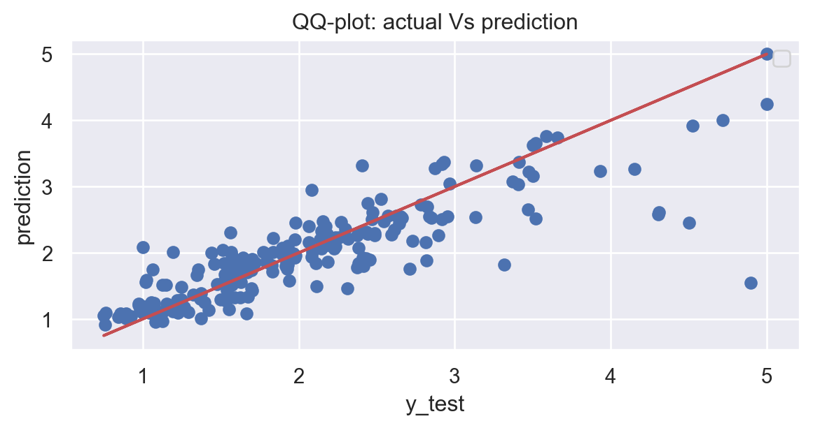

# Metric of error
from sklearn.metrics import mean_squared_error, mean_absolute_error, mean_absolute_percentage_error
# Plotting figures
import matplotlib.pyplot as plt
from matplotlib import cm
# Import class GradientCOBRA from the gradientcobra library
from gradientcobra.gradientcobra import GradientCOBRA
import seaborn as sns
sns.set()gradientcobra package
Installing and importing packages
gradientcobra can be installed from pypi using pip:
pip install gradientcobra
Importing packages
Simulated data
We simulate a regression data with \(1000\) observations and \(10\) inputs variables.
# For simulating dataset
from sklearn.datasets import make_regression
X1, y1 = make_regression(n_samples=1000, n_features=10, noise=1)Now, let’s randoly split the simulated data into \(80\%-20\%\) training-testing data.
from sklearn.model_selection import train_test_split
X_train1, X_test1, y_train1, y_test1 = train_test_split(X1, y1, test_size=0.2)
print('shape: x_train = {} , x_train = {} , y_train = {} , y_test = {}'.format(
X_train1.shape,
X_test1.shape,
y_train1.shape,
y_test1.shape))shape: x_train = (800, 10) , x_train = (200, 10) , y_train = (800,) , y_test = (200,)GradientCOBRA with default parameters
We great gradientcobra object called gc1 using GradientCOBRA class with the default parameters, then fit it on the training data.
gc1 = GradientCOBRA()
gc1_fit = gc1.fit(X_train1, y_train1)
* Gradient descent with radial kernel is implemented...
~ Initial t = 0: ~ bandwidth: 2.500 ~ gradient: 22.166 ~ threshold: 1e-05
~ Iteration: 1 ~ bandwidth: 2.490 ~ gradient: 22.166 ~ stopping criterion: 11.085 ~ Iteration: 2 ~ bandwidth: 2.490 ~ gradient: 22.166 ~ stopping criterion: 11.085 ~ Iteration: 3 ~ bandwidth: 2.490 ~ gradient: 22.166 ~ stopping criterion: 11.085 ~ Iteration: 4 ~ bandwidth: 2.490 ~ gradient: 22.166 ~ stopping criterion: 11.085 ~ Iteration: 5 ~ bandwidth: 2.490 ~ gradient: 21.876 ~ stopping criterion: 11.083 ~ Iteration: 6 ~ bandwidth: 2.480 ~ gradient: 21.870 ~ stopping criterion: 10.938 ~ Iteration: 7 ~ bandwidth: 2.470 ~ gradient: 21.952 ~ stopping criterion: 10.935 ~ Iteration: 8 ~ bandwidth: 2.460 ~ gradient: 22.058 ~ stopping criterion: 10.976 ~ Iteration: 9 ~ bandwidth: 2.450 ~ gradient: 20.953 ~ stopping criterion: 11.029 ~ Iteration: 10 ~ bandwidth: 2.441 ~ gradient: 20.699 ~ stopping criterion: 10.476 ~ Iteration: 11 ~ bandwidth: 2.432 ~ gradient: 21.822 ~ stopping criterion: 10.349 ~ Iteration: 12 ~ bandwidth: 2.422 ~ gradient: 21.870 ~ stopping criterion: 10.911 ~ Iteration: 13 ~ bandwidth: 2.412 ~ gradient: 20.791 ~ stopping criterion: 10.935 ~ Iteration: 14 ~ bandwidth: 2.403 ~ gradient: 21.626 ~ stopping criterion: 10.395 ~ Iteration: 15 ~ bandwidth: 2.393 ~ gradient: 21.254 ~ stopping criterion: 10.813 ~ Iteration: 16 ~ bandwidth: 2.383 ~ gradient: 20.870 ~ stopping criterion: 10.627 ~ Iteration: 17 ~ bandwidth: 2.374 ~ gradient: 21.603 ~ stopping criterion: 10.435 ~ Iteration: 18 ~ bandwidth: 2.364 ~ gradient: 21.634 ~ stopping criterion: 10.801 ~ Iteration: 19 ~ bandwidth: 2.354 ~ gradient: 20.917 ~ stopping criterion: 10.817 ~ Iteration: 20 ~ bandwidth: 2.345 ~ gradient: 22.612 ~ stopping criterion: 10.458 ~ Iteration: 21 ~ bandwidth: 2.335 ~ gradient: 21.725 ~ stopping criterion: 11.306 ~ Iteration: 22 ~ bandwidth: 2.325 ~ gradient: 20.900 ~ stopping criterion: 10.863 ~ Iteration: 23 ~ bandwidth: 2.315 ~ gradient: 20.175 ~ stopping criterion: 10.450 ~ Iteration: 24 ~ bandwidth: 2.306 ~ gradient: 22.082 ~ stopping criterion: 10.087 ~ Iteration: 25 ~ bandwidth: 2.296 ~ gradient: 21.487 ~ stopping criterion: 11.041 ~ Iteration: 26 ~ bandwidth: 2.287 ~ gradient: 21.717 ~ stopping criterion: 10.743 ~ Iteration: 27 ~ bandwidth: 2.277 ~ gradient: 22.466 ~ stopping criterion: 10.859 ~ Iteration: 28 ~ bandwidth: 2.267 ~ gradient: 21.405 ~ stopping criterion: 11.233 ~ Iteration: 29 ~ bandwidth: 2.257 ~ gradient: 21.995 ~ stopping criterion: 10.703 ~ Iteration: 30 ~ bandwidth: 2.247 ~ gradient: 21.794 ~ stopping criterion: 10.997 ~ Iteration: 31 ~ bandwidth: 2.237 ~ gradient: 20.739 ~ stopping criterion: 10.897 ~ Iteration: 32 ~ bandwidth: 2.228 ~ gradient: 21.546 ~ stopping criterion: 10.369 ~ Iteration: 33 ~ bandwidth: 2.218 ~ gradient: 21.865 ~ stopping criterion: 10.773 ~ Iteration: 34 ~ bandwidth: 2.208 ~ gradient: 22.067 ~ stopping criterion: 10.933 ~ Iteration: 35 ~ bandwidth: 2.198 ~ gradient: 21.257 ~ stopping criterion: 11.033 ~ Iteration: 36 ~ bandwidth: 2.189 ~ gradient: 22.267 ~ stopping criterion: 10.629 ~ Iteration: 37 ~ bandwidth: 2.179 ~ gradient: 22.055 ~ stopping criterion: 11.133 ~ Iteration: 38 ~ bandwidth: 2.169 ~ gradient: 21.248 ~ stopping criterion: 11.028 ~ Iteration: 39 ~ bandwidth: 2.159 ~ gradient: 20.811 ~ stopping criterion: 10.624 ~ Iteration: 40 ~ bandwidth: 2.150 ~ gradient: 21.597 ~ stopping criterion: 10.405 ~ Iteration: 41 ~ bandwidth: 2.140 ~ gradient: 21.208 ~ stopping criterion: 10.798 ~ Iteration: 42 ~ bandwidth: 2.131 ~ gradient: 21.967 ~ stopping criterion: 10.604 ~ Iteration: 43 ~ bandwidth: 2.121 ~ gradient: 22.597 ~ stopping criterion: 10.983 ~ Iteration: 44 ~ bandwidth: 2.111 ~ gradient: 21.430 ~ stopping criterion: 11.299 ~ Iteration: 45 ~ bandwidth: 2.101 ~ gradient: 22.248 ~ stopping criterion: 10.715 ~ Iteration: 46 ~ bandwidth: 2.091 ~ gradient: 23.679 ~ stopping criterion: 11.124 ~ Iteration: 47 ~ bandwidth: 2.080 ~ gradient: 22.747 ~ stopping criterion: 11.840 ~ Iteration: 48 ~ bandwidth: 2.070 ~ gradient: 21.251 ~ stopping criterion: 11.374 ~ Iteration: 49 ~ bandwidth: 2.060 ~ gradient: 22.047 ~ stopping criterion: 10.625 ~ Iteration: 50 ~ bandwidth: 2.050 ~ gradient: 22.001 ~ stopping criterion: 11.024 ~ Iteration: 51 ~ bandwidth: 2.040 ~ gradient: 21.365 ~ stopping criterion: 11.000 ~ Iteration: 52 ~ bandwidth: 2.031 ~ gradient: 22.162 ~ stopping criterion: 10.683 ~ Iteration: 53 ~ bandwidth: 2.021 ~ gradient: 21.625 ~ stopping criterion: 11.081 ~ Iteration: 54 ~ bandwidth: 2.011 ~ gradient: 21.623 ~ stopping criterion: 10.812 ~ Iteration: 55 ~ bandwidth: 2.001 ~ gradient: 22.091 ~ stopping criterion: 10.812 ~ Iteration: 56 ~ bandwidth: 1.991 ~ gradient: 21.691 ~ stopping criterion: 11.046 ~ Iteration: 57 ~ bandwidth: 1.981 ~ gradient: 22.009 ~ stopping criterion: 10.845 ~ Iteration: 58 ~ bandwidth: 1.972 ~ gradient: 21.519 ~ stopping criterion: 11.005 ~ Iteration: 59 ~ bandwidth: 1.962 ~ gradient: 21.952 ~ stopping criterion: 10.759 ~ Iteration: 60 ~ bandwidth: 1.952 ~ gradient: 21.864 ~ stopping criterion: 10.976 ~ Iteration: 61 ~ bandwidth: 1.942 ~ gradient: 21.136 ~ stopping criterion: 10.932 ~ Iteration: 62 ~ bandwidth: 1.933 ~ gradient: 20.982 ~ stopping criterion: 10.568 ~ Iteration: 63 ~ bandwidth: 1.923 ~ gradient: 21.421 ~ stopping criterion: 10.491 ~ Iteration: 64 ~ bandwidth: 1.913 ~ gradient: 22.319 ~ stopping criterion: 10.710 ~ Iteration: 65 ~ bandwidth: 1.903 ~ gradient: 22.011 ~ stopping criterion: 11.160 ~ Iteration: 66 ~ bandwidth: 1.893 ~ gradient: 21.994 ~ stopping criterion: 11.005 ~ Iteration: 67 ~ bandwidth: 1.884 ~ gradient: 21.116 ~ stopping criterion: 10.997 ~ Iteration: 68 ~ bandwidth: 1.874 ~ gradient: 21.530 ~ stopping criterion: 10.558 ~ Iteration: 69 ~ bandwidth: 1.864 ~ gradient: 20.889 ~ stopping criterion: 10.765 ~ Iteration: 70 ~ bandwidth: 1.855 ~ gradient: 22.264 ~ stopping criterion: 10.445 ~ Iteration: 71 ~ bandwidth: 1.845 ~ gradient: 21.977 ~ stopping criterion: 11.132 ~ Iteration: 72 ~ bandwidth: 1.835 ~ gradient: 21.949 ~ stopping criterion: 10.988 ~ Iteration: 73 ~ bandwidth: 1.825 ~ gradient: 21.052 ~ stopping criterion: 10.975 ~ Iteration: 74 ~ bandwidth: 1.815 ~ gradient: 21.216 ~ stopping criterion: 10.526 ~ Iteration: 75 ~ bandwidth: 1.806 ~ gradient: 21.187 ~ stopping criterion: 10.608 ~ Iteration: 76 ~ bandwidth: 1.796 ~ gradient: 20.831 ~ stopping criterion: 10.593 ~ Iteration: 77 ~ bandwidth: 1.787 ~ gradient: 20.431 ~ stopping criterion: 10.416 ~ Iteration: 78 ~ bandwidth: 1.778 ~ gradient: 20.369 ~ stopping criterion: 10.216 ~ Iteration: 79 ~ bandwidth: 1.769 ~ gradient: 20.824 ~ stopping criterion: 10.185 ~ Iteration: 80 ~ bandwidth: 1.759 ~ gradient: 20.233 ~ stopping criterion: 10.412 ~ Iteration: 81 ~ bandwidth: 1.750 ~ gradient: 20.816 ~ stopping criterion: 10.117 ~ Iteration: 82 ~ bandwidth: 1.741 ~ gradient: 20.757 ~ stopping criterion: 10.408 ~ Iteration: 83 ~ bandwidth: 1.731 ~ gradient: 20.167 ~ stopping criterion: 10.379 ~ Iteration: 84 ~ bandwidth: 1.722 ~ gradient: 21.603 ~ stopping criterion: 10.084 ~ Iteration: 85 ~ bandwidth: 1.712 ~ gradient: 20.948 ~ stopping criterion: 10.801 ~ Iteration: 86 ~ bandwidth: 1.703 ~ gradient: 20.948 ~ stopping criterion: 10.474 ~ Iteration: 87 ~ bandwidth: 1.694 ~ gradient: 21.173 ~ stopping criterion: 10.474 ~ Iteration: 88 ~ bandwidth: 1.684 ~ gradient: 20.544 ~ stopping criterion: 10.586 ~ Iteration: 89 ~ bandwidth: 1.675 ~ gradient: 20.497 ~ stopping criterion: 10.272 ~ Iteration: 90 ~ bandwidth: 1.665 ~ gradient: 20.917 ~ stopping criterion: 10.248 ~ Iteration: 91 ~ bandwidth: 1.656 ~ gradient: 19.790 ~ stopping criterion: 10.459 ~ Iteration: 92 ~ bandwidth: 1.647 ~ gradient: 20.712 ~ stopping criterion: 9.895 ~ Iteration: 93 ~ bandwidth: 1.638 ~ gradient: 19.302 ~ stopping criterion: 10.356 ~ Iteration: 94 ~ bandwidth: 1.629 ~ gradient: 20.508 ~ stopping criterion: 9.651 ~ Iteration: 95 ~ bandwidth: 1.620 ~ gradient: 20.737 ~ stopping criterion: 10.254 ~ Iteration: 96 ~ bandwidth: 1.610 ~ gradient: 19.444 ~ stopping criterion: 10.368 ~ Iteration: 97 ~ bandwidth: 1.602 ~ gradient: 19.428 ~ stopping criterion: 9.722 ~ Iteration: 98 ~ bandwidth: 1.593 ~ gradient: 18.327 ~ stopping criterion: 9.714 ~ Iteration: 99 ~ bandwidth: 1.585 ~ gradient: 20.370 ~ stopping criterion: 9.163 ~ Iteration: 100 ~ bandwidth: 1.575 ~ gradient: 19.274 ~ stopping criterion: 10.185 ~ Iteration: 101 ~ bandwidth: 1.567 ~ gradient: 20.104 ~ stopping criterion: 9.637 ~ Iteration: 102 ~ bandwidth: 1.558 ~ gradient: 20.151 ~ stopping criterion: 10.052 ~ Iteration: 103 ~ bandwidth: 1.549 ~ gradient: 20.031 ~ stopping criterion: 10.076 ~ Iteration: 104 ~ bandwidth: 1.540 ~ gradient: 19.407 ~ stopping criterion: 10.015 ~ Iteration: 105 ~ bandwidth: 1.531 ~ gradient: 20.250 ~ stopping criterion: 9.703 ~ Iteration: 106 ~ bandwidth: 1.522 ~ gradient: 18.411 ~ stopping criterion: 10.125 ~ Iteration: 107 ~ bandwidth: 1.513 ~ gradient: 18.519 ~ stopping criterion: 9.206 ~ Iteration: 108 ~ bandwidth: 1.505 ~ gradient: 18.491 ~ stopping criterion: 9.259 ~ Iteration: 109 ~ bandwidth: 1.497 ~ gradient: 17.032 ~ stopping criterion: 9.246 ~ Iteration: 110 ~ bandwidth: 1.489 ~ gradient: 17.428 ~ stopping criterion: 8.516 ~ Iteration: 111 ~ bandwidth: 1.481 ~ gradient: 17.633 ~ stopping criterion: 8.714 ~ Iteration: 112 ~ bandwidth: 1.473 ~ gradient: 17.292 ~ stopping criterion: 8.816 ~ Iteration: 113 ~ bandwidth: 1.465 ~ gradient: 17.874 ~ stopping criterion: 8.646 ~ Iteration: 114 ~ bandwidth: 1.457 ~ gradient: 17.970 ~ stopping criterion: 8.937 ~ Iteration: 115 ~ bandwidth: 1.449 ~ gradient: 16.611 ~ stopping criterion: 8.985 ~ Iteration: 116 ~ bandwidth: 1.442 ~ gradient: 17.790 ~ stopping criterion: 8.306 ~ Iteration: 117 ~ bandwidth: 1.434 ~ gradient: 17.168 ~ stopping criterion: 8.895 ~ Iteration: 118 ~ bandwidth: 1.426 ~ gradient: 16.191 ~ stopping criterion: 8.584 ~ Iteration: 119 ~ bandwidth: 1.419 ~ gradient: 17.253 ~ stopping criterion: 8.096 ~ Iteration: 120 ~ bandwidth: 1.411 ~ gradient: 17.231 ~ stopping criterion: 8.627 ~ Iteration: 121 ~ bandwidth: 1.403 ~ gradient: 15.007 ~ stopping criterion: 8.616 ~ Iteration: 122 ~ bandwidth: 1.396 ~ gradient: 16.457 ~ stopping criterion: 7.503 ~ Iteration: 123 ~ bandwidth: 1.389 ~ gradient: 15.916 ~ stopping criterion: 8.229 ~ Iteration: 124 ~ bandwidth: 1.382 ~ gradient: 14.353 ~ stopping criterion: 7.958 ~ Iteration: 125 ~ bandwidth: 1.375 ~ gradient: 16.403 ~ stopping criterion: 7.176 ~ Iteration: 126 ~ bandwidth: 1.368 ~ gradient: 16.570 ~ stopping criterion: 8.202 ~ Iteration: 127 ~ bandwidth: 1.360 ~ gradient: 15.766 ~ stopping criterion: 8.285 ~ Iteration: 128 ~ bandwidth: 1.353 ~ gradient: 14.861 ~ stopping criterion: 7.883 ~ Iteration: 129 ~ bandwidth: 1.347 ~ gradient: 15.495 ~ stopping criterion: 7.430 ~ Iteration: 130 ~ bandwidth: 1.340 ~ gradient: 15.853 ~ stopping criterion: 7.747 ~ Iteration: 131 ~ bandwidth: 1.332 ~ gradient: 14.765 ~ stopping criterion: 7.926 ~ Iteration: 132 ~ bandwidth: 1.326 ~ gradient: 14.859 ~ stopping criterion: 7.383 ~ Iteration: 133 ~ bandwidth: 1.319 ~ gradient: 14.416 ~ stopping criterion: 7.429 ~ Iteration: 134 ~ bandwidth: 1.313 ~ gradient: 13.501 ~ stopping criterion: 7.208 ~ Iteration: 135 ~ bandwidth: 1.306 ~ gradient: 14.375 ~ stopping criterion: 6.750 ~ Iteration: 136 ~ bandwidth: 1.300 ~ gradient: 12.698 ~ stopping criterion: 7.188 ~ Iteration: 137 ~ bandwidth: 1.294 ~ gradient: 15.093 ~ stopping criterion: 6.349 ~ Iteration: 138 ~ bandwidth: 1.287 ~ gradient: 13.668 ~ stopping criterion: 7.546 ~ Iteration: 139 ~ bandwidth: 1.281 ~ gradient: 13.055 ~ stopping criterion: 6.834 ~ Iteration: 140 ~ bandwidth: 1.275 ~ gradient: 13.373 ~ stopping criterion: 6.527 ~ Iteration: 141 ~ bandwidth: 1.269 ~ gradient: 12.765 ~ stopping criterion: 6.687 ~ Iteration: 142 ~ bandwidth: 1.264 ~ gradient: 12.937 ~ stopping criterion: 6.382 ~ Iteration: 143 ~ bandwidth: 1.258 ~ gradient: 12.031 ~ stopping criterion: 6.469 ~ Iteration: 144 ~ bandwidth: 1.252 ~ gradient: 12.009 ~ stopping criterion: 6.015 ~ Iteration: 145 ~ bandwidth: 1.247 ~ gradient: 11.829 ~ stopping criterion: 6.005 ~ Iteration: 146 ~ bandwidth: 1.242 ~ gradient: 12.138 ~ stopping criterion: 5.915 ~ Iteration: 147 ~ bandwidth: 1.236 ~ gradient: 11.216 ~ stopping criterion: 6.069 ~ Iteration: 148 ~ bandwidth: 1.231 ~ gradient: 11.760 ~ stopping criterion: 5.608 ~ Iteration: 149 ~ bandwidth: 1.226 ~ gradient: 10.578 ~ stopping criterion: 5.880 ~ Iteration: 150 ~ bandwidth: 1.221 ~ gradient: 11.112 ~ stopping criterion: 5.289 ~ Iteration: 151 ~ bandwidth: 1.216 ~ gradient: 11.555 ~ stopping criterion: 5.556 ~ Iteration: 152 ~ bandwidth: 1.211 ~ gradient: 10.864 ~ stopping criterion: 5.777 ~ Iteration: 153 ~ bandwidth: 1.206 ~ gradient: 10.946 ~ stopping criterion: 5.432 ~ Iteration: 154 ~ bandwidth: 1.201 ~ gradient: 10.782 ~ stopping criterion: 5.473 ~ Iteration: 155 ~ bandwidth: 1.196 ~ gradient: 9.314 ~ stopping criterion: 5.391 ~ Iteration: 156 ~ bandwidth: 1.192 ~ gradient: 9.830 ~ stopping criterion: 4.657 ~ Iteration: 157 ~ bandwidth: 1.187 ~ gradient: 10.498 ~ stopping criterion: 4.915 ~ Iteration: 158 ~ bandwidth: 1.183 ~ gradient: 9.307 ~ stopping criterion: 5.249 ~ Iteration: 159 ~ bandwidth: 1.178 ~ gradient: 10.130 ~ stopping criterion: 4.654 ~ Iteration: 160 ~ bandwidth: 1.174 ~ gradient: 10.084 ~ stopping criterion: 5.065 ~ Iteration: 161 ~ bandwidth: 1.169 ~ gradient: 7.207 ~ stopping criterion: 5.042 ~ Iteration: 162 ~ bandwidth: 1.166 ~ gradient: 8.686 ~ stopping criterion: 3.604 ~ Iteration: 163 ~ bandwidth: 1.162 ~ gradient: 8.811 ~ stopping criterion: 4.343 ~ Iteration: 164 ~ bandwidth: 1.158 ~ gradient: 9.067 ~ stopping criterion: 4.405 ~ Iteration: 165 ~ bandwidth: 1.154 ~ gradient: 8.300 ~ stopping criterion: 4.534 ~ Iteration: 166 ~ bandwidth: 1.150 ~ gradient: 8.161 ~ stopping criterion: 4.150 ~ Iteration: 167 ~ bandwidth: 1.147 ~ gradient: 8.711 ~ stopping criterion: 4.080 ~ Iteration: 168 ~ bandwidth: 1.143 ~ gradient: 6.650 ~ stopping criterion: 4.355 ~ Iteration: 169 ~ bandwidth: 1.140 ~ gradient: 7.721 ~ stopping criterion: 3.325 ~ Iteration: 170 ~ bandwidth: 1.136 ~ gradient: 7.402 ~ stopping criterion: 3.861 ~ Iteration: 171 ~ bandwidth: 1.133 ~ gradient: 6.958 ~ stopping criterion: 3.701 ~ Iteration: 172 ~ bandwidth: 1.130 ~ gradient: 5.579 ~ stopping criterion: 3.479 ~ Iteration: 173 ~ bandwidth: 1.127 ~ gradient: 6.706 ~ stopping criterion: 2.789 ~ Iteration: 174 ~ bandwidth: 1.124 ~ gradient: 6.038 ~ stopping criterion: 3.353 ~ Iteration: 175 ~ bandwidth: 1.121 ~ gradient: 6.453 ~ stopping criterion: 3.019 ~ Iteration: 176 ~ bandwidth: 1.119 ~ gradient: 6.479 ~ stopping criterion: 3.226 ~ Iteration: 177 ~ bandwidth: 1.116 ~ gradient: 5.453 ~ stopping criterion: 3.239 ~ Iteration: 178 ~ bandwidth: 1.113 ~ gradient: 5.994 ~ stopping criterion: 2.726 ~ Iteration: 179 ~ bandwidth: 1.110 ~ gradient: 5.727 ~ stopping criterion: 2.997 ~ Iteration: 180 ~ bandwidth: 1.108 ~ gradient: 5.308 ~ stopping criterion: 2.864 ~ Iteration: 181 ~ bandwidth: 1.106 ~ gradient: 5.756 ~ stopping criterion: 2.654 ~ Iteration: 182 ~ bandwidth: 1.103 ~ gradient: 5.472 ~ stopping criterion: 2.878 ~ Iteration: 183 ~ bandwidth: 1.100 ~ gradient: 6.158 ~ stopping criterion: 2.736 ~ Iteration: 184 ~ bandwidth: 1.098 ~ gradient: 5.473 ~ stopping criterion: 3.079 ~ Iteration: 185 ~ bandwidth: 1.095 ~ gradient: 5.309 ~ stopping criterion: 2.737 ~ Iteration: 186 ~ bandwidth: 1.093 ~ gradient: 4.397 ~ stopping criterion: 2.654 ~ Iteration: 187 ~ bandwidth: 1.091 ~ gradient: 5.189 ~ stopping criterion: 2.198 ~ Iteration: 188 ~ bandwidth: 1.088 ~ gradient: 4.261 ~ stopping criterion: 2.595 ~ Iteration: 189 ~ bandwidth: 1.087 ~ gradient: 2.939 ~ stopping criterion: 2.130 ~ Iteration: 190 ~ bandwidth: 1.085 ~ gradient: 4.834 ~ stopping criterion: 1.470 ~ Iteration: 191 ~ bandwidth: 1.083 ~ gradient: 3.256 ~ stopping criterion: 2.417 ~ Iteration: 192 ~ bandwidth: 1.082 ~ gradient: 5.048 ~ stopping criterion: 1.628 ~ Iteration: 193 ~ bandwidth: 1.079 ~ gradient: 5.036 ~ stopping criterion: 2.524 ~ Iteration: 194 ~ bandwidth: 1.077 ~ gradient: 2.593 ~ stopping criterion: 2.518 ~ Iteration: 195 ~ bandwidth: 1.076 ~ gradient: 3.913 ~ stopping criterion: 1.296 ~ Iteration: 196 ~ bandwidth: 1.074 ~ gradient: 3.221 ~ stopping criterion: 1.957 ~ Iteration: 197 ~ bandwidth: 1.073 ~ gradient: 2.954 ~ stopping criterion: 1.610 ~ Iteration: 198 ~ bandwidth: 1.071 ~ gradient: 3.012 ~ stopping criterion: 1.477 ~ Iteration: 199 ~ bandwidth: 1.070 ~ gradient: 3.327 ~ stopping criterion: 1.506 ~ Iteration: 200 ~ bandwidth: 1.068 ~ gradient: 3.081 ~ stopping criterion: 1.663 ~ Iteration: 201 ~ bandwidth: 1.067 ~ gradient: 3.378 ~ stopping criterion: 1.541 ~ Iteration: 202 ~ bandwidth: 1.066 ~ gradient: 3.117 ~ stopping criterion: 1.689 ~ Iteration: 203 ~ bandwidth: 1.064 ~ gradient: 3.433 ~ stopping criterion: 1.558 ~ Iteration: 204 ~ bandwidth: 1.063 ~ gradient: 2.889 ~ stopping criterion: 1.716 ~ Iteration: 205 ~ bandwidth: 1.061 ~ gradient: 2.158 ~ stopping criterion: 1.445 ~ Iteration: 206 ~ bandwidth: 1.060 ~ gradient: 2.898 ~ stopping criterion: 1.079 ~ Iteration: 207 ~ bandwidth: 1.059 ~ gradient: 3.289 ~ stopping criterion: 1.449 ~ Iteration: 208 ~ bandwidth: 1.058 ~ gradient: 1.930 ~ stopping criterion: 1.645 ~ Iteration: 209 ~ bandwidth: 1.057 ~ gradient: 1.554 ~ stopping criterion: 0.965 ~ Iteration: 210 ~ bandwidth: 1.056 ~ gradient: 2.883 ~ stopping criterion: 0.777 ~ Iteration: 211 ~ bandwidth: 1.055 ~ gradient: 0.931 ~ stopping criterion: 1.442 ~ Iteration: 212 ~ bandwidth: 1.054 ~ gradient: 1.650 ~ stopping criterion: 0.465 ~ Iteration: 213 ~ bandwidth: 1.053 ~ gradient: 2.190 ~ stopping criterion: 0.825 ~ Iteration: 214 ~ bandwidth: 1.052 ~ gradient: 2.841 ~ stopping criterion: 1.095 ~ Iteration: 215 ~ bandwidth: 1.051 ~ gradient: 3.152 ~ stopping criterion: 1.421 ~ Iteration: 216 ~ bandwidth: 1.050 ~ gradient: 1.152 ~ stopping criterion: 1.576 ~ Iteration: 217 ~ bandwidth: 1.049 ~ gradient: 1.499 ~ stopping criterion: 0.576 ~ Iteration: 218 ~ bandwidth: 1.049 ~ gradient: 1.976 ~ stopping criterion: 0.749 ~ Iteration: 219 ~ bandwidth: 1.048 ~ gradient: 1.706 ~ stopping criterion: 0.988 ~ Iteration: 220 ~ bandwidth: 1.047 ~ gradient: 1.756 ~ stopping criterion: 0.853 ~ Iteration: 221 ~ bandwidth: 1.046 ~ gradient: 1.088 ~ stopping criterion: 0.878 ~ Iteration: 222 ~ bandwidth: 1.046 ~ gradient: 1.928 ~ stopping criterion: 0.544 ~ Iteration: 223 ~ bandwidth: 1.045 ~ gradient: 1.630 ~ stopping criterion: 0.964 ~ Iteration: 224 ~ bandwidth: 1.044 ~ gradient: 1.801 ~ stopping criterion: 0.815 ~ Iteration: 225 ~ bandwidth: 1.043 ~ gradient: 0.910 ~ stopping criterion: 0.901 ~ Iteration: 226 ~ bandwidth: 1.043 ~ gradient: 1.949 ~ stopping criterion: 0.455 ~ Iteration: 227 ~ bandwidth: 1.042 ~ gradient: 1.567 ~ stopping criterion: 0.975 ~ Iteration: 228 ~ bandwidth: 1.041 ~ gradient: 2.105 ~ stopping criterion: 0.783 ~ Iteration: 229 ~ bandwidth: 1.040 ~ gradient: 1.092 ~ stopping criterion: 1.053 ~ Iteration: 230 ~ bandwidth: 1.040 ~ gradient: 0.918 ~ stopping criterion: 0.546 ~ Iteration: 231 ~ bandwidth: 1.039 ~ gradient: 1.135 ~ stopping criterion: 0.459 ~ Iteration: 232 ~ bandwidth: 1.039 ~ gradient: 1.095 ~ stopping criterion: 0.567 ~ Iteration: 233 ~ bandwidth: 1.038 ~ gradient: 1.566 ~ stopping criterion: 0.548 ~ Iteration: 234 ~ bandwidth: 1.038 ~ gradient: 1.896 ~ stopping criterion: 0.783 ~ Iteration: 235 ~ bandwidth: 1.037 ~ gradient: 0.618 ~ stopping criterion: 0.948 ~ Iteration: 236 ~ bandwidth: 1.037 ~ gradient: 0.987 ~ stopping criterion: 0.309 ~ Iteration: 237 ~ bandwidth: 1.036 ~ gradient: 2.308 ~ stopping criterion: 0.493 ~ Iteration: 238 ~ bandwidth: 1.035 ~ gradient: -0.175 ~ stopping criterion: 1.154 ~ Iteration: 239 ~ bandwidth: 1.035 ~ gradient: -0.264 ~ stopping criterion: 0.087 ~ Iteration: 240 ~ bandwidth: 1.035 ~ gradient: 0.814 ~ stopping criterion: 0.132 ~ Iteration: 241 ~ bandwidth: 1.035 ~ gradient: 0.609 ~ stopping criterion: 0.407 ~ Iteration: 242 ~ bandwidth: 1.035 ~ gradient: 1.127 ~ stopping criterion: 0.304 ~ Iteration: 243 ~ bandwidth: 1.034 ~ gradient: 1.029 ~ stopping criterion: 0.564 ~ Iteration: 244 ~ bandwidth: 1.034 ~ gradient: -0.060 ~ stopping criterion: 0.514 ~ Iteration: 245 ~ bandwidth: 1.034 ~ gradient: 0.207 ~ stopping criterion: 0.030 ~ Iteration: 246 ~ bandwidth: 1.034 ~ gradient: -0.249 ~ stopping criterion: 0.103 ~ Iteration: 247 ~ bandwidth: 1.034 ~ gradient: 1.245 ~ stopping criterion: 0.125 ~ Iteration: 248 ~ bandwidth: 1.034 ~ gradient: -0.350 ~ stopping criterion: 0.622 ~ Iteration: 249 ~ bandwidth: 1.034 ~ gradient: -0.108 ~ stopping criterion: 0.175 ~ Iteration: 250 ~ bandwidth: 1.034 ~ gradient: 0.285 ~ stopping criterion: 0.054 ~ Iteration: 251 ~ bandwidth: 1.034 ~ gradient: 0.840 ~ stopping criterion: 0.143 ~ Iteration: 252 ~ bandwidth: 1.034 ~ gradient: 1.007 ~ stopping criterion: 0.420 ~ Iteration: 253 ~ bandwidth: 1.034 ~ gradient: -0.158 ~ stopping criterion: 0.504 ~ Iteration: 254 ~ bandwidth: 1.034 ~ gradient: 0.453 ~ stopping criterion: 0.079 ~ Iteration: 255 ~ bandwidth: 1.034 ~ gradient: -0.008 ~ stopping criterion: 0.226 ~ Iteration: 256 ~ bandwidth: 1.034 ~ gradient: 0.120 ~ stopping criterion: 0.004 ~ Iteration: 257 ~ bandwidth: 1.034 ~ gradient: 0.490 ~ stopping criterion: 0.060 ~ Iteration: 258 ~ bandwidth: 1.034 ~ gradient: 0.736 ~ stopping criterion: 0.245 ~ Iteration: 259 ~ bandwidth: 1.034 ~ gradient: 0.153 ~ stopping criterion: 0.368 ~ Iteration: 260 ~ bandwidth: 1.034 ~ gradient: -0.312 ~ stopping criterion: 0.077 ~ Iteration: 261 ~ bandwidth: 1.034 ~ gradient: -0.348 ~ stopping criterion: 0.156 ~ Iteration: 262 ~ bandwidth: 1.034 ~ gradient: -0.145 ~ stopping criterion: 0.174 ~ Iteration: 263 ~ bandwidth: 1.034 ~ gradient: 1.256 ~ stopping criterion: 0.072 ~ Iteration: 264 ~ bandwidth: 1.034 ~ gradient: 1.048 ~ stopping criterion: 0.628 ~ Iteration: 265 ~ bandwidth: 1.034 ~ gradient: 0.165 ~ stopping criterion: 0.524 ~ Iteration: 266 ~ bandwidth: 1.034 ~ gradient: 0.483 ~ stopping criterion: 0.083 ~ Iteration: 267 ~ bandwidth: 1.034 ~ gradient: 2.015 ~ stopping criterion: 0.242 ~ Iteration: 268 ~ bandwidth: 1.034 ~ gradient: 0.299 ~ stopping criterion: 1.007 ~ Iteration: 269 ~ bandwidth: 1.034 ~ gradient: 1.283 ~ stopping criterion: 0.149 ~ Iteration: 270 ~ bandwidth: 1.034 ~ gradient: 0.880 ~ stopping criterion: 0.641 ~ Iteration: 271 ~ bandwidth: 1.034 ~ gradient: 0.928 ~ stopping criterion: 0.440 ~ Iteration: 272 ~ bandwidth: 1.034 ~ gradient: 0.265 ~ stopping criterion: 0.464 ~ Iteration: 273 ~ bandwidth: 1.034 ~ gradient: 0.202 ~ stopping criterion: 0.132 ~ Iteration: 274 ~ bandwidth: 1.034 ~ gradient: 1.192 ~ stopping criterion: 0.101 ~ Iteration: 275 ~ bandwidth: 1.034 ~ gradient: -0.541 ~ stopping criterion: 0.596 ~ Iteration: 276 ~ bandwidth: 1.034 ~ gradient: 0.749 ~ stopping criterion: 0.271 ~ Iteration: 277 ~ bandwidth: 1.034 ~ gradient: 0.946 ~ stopping criterion: 0.375 ~ Iteration: 278 ~ bandwidth: 1.034 ~ gradient: 1.472 ~ stopping criterion: 0.473 ~ Iteration: 279 ~ bandwidth: 1.034 ~ gradient: 0.714 ~ stopping criterion: 0.736 ~ Iteration: 280 ~ bandwidth: 1.034 ~ gradient: 1.737 ~ stopping criterion: 0.357 ~ Iteration: 281 ~ bandwidth: 1.034 ~ gradient: 0.731 ~ stopping criterion: 0.869 ~ Iteration: 282 ~ bandwidth: 1.034 ~ gradient: 0.978 ~ stopping criterion: 0.366 ~ Iteration: 283 ~ bandwidth: 1.034 ~ gradient: 0.814 ~ stopping criterion: 0.489 ~ Iteration: 284 ~ bandwidth: 1.033 ~ gradient: 0.746 ~ stopping criterion: 0.407 ~ Iteration: 285 ~ bandwidth: 1.033 ~ gradient: 0.140 ~ stopping criterion: 0.373 ~ Iteration: 286 ~ bandwidth: 1.033 ~ gradient: 0.406 ~ stopping criterion: 0.070 ~ Iteration: 287 ~ bandwidth: 1.033 ~ gradient: 0.556 ~ stopping criterion: 0.203 ~ Iteration: 288 ~ bandwidth: 1.033 ~ gradient: 0.037 ~ stopping criterion: 0.278 ~ Iteration: 289 ~ bandwidth: 1.033 ~ gradient: 0.038 ~ stopping criterion: 0.018 ~ Iteration: 290 ~ bandwidth: 1.033 ~ gradient: 0.638 ~ stopping criterion: 0.019 ~ Iteration: 291 ~ bandwidth: 1.033 ~ gradient: -0.569 ~ stopping criterion: 0.319 ~ Iteration: 292 ~ bandwidth: 1.033 ~ gradient: -0.837 ~ stopping criterion: 0.285 ~ Iteration: 293 ~ bandwidth: 1.033 ~ gradient: 1.061 ~ stopping criterion: 0.419 ~ Iteration: 294 ~ bandwidth: 1.033 ~ gradient: 1.170 ~ stopping criterion: 0.530 ~ Iteration: 295 ~ bandwidth: 1.033 ~ gradient: 0.498 ~ stopping criterion: 0.585 ~ Iteration: 296 ~ bandwidth: 1.033 ~ gradient: 0.524 ~ stopping criterion: 0.249 ~ Iteration: 297 ~ bandwidth: 1.033 ~ gradient: -0.338 ~ stopping criterion: 0.262 ~ Iteration: 298 ~ bandwidth: 1.033 ~ gradient: 0.375 ~ stopping criterion: 0.169 ~ Iteration: 299 ~ bandwidth: 1.033 ~ gradient: 1.146 ~ stopping criterion: 0.188 ~ Iteration: 300 ~ bandwidth: 1.033 ~ gradient: -0.603 ~ stopping criterion: 0.573 ~ Stopped at: 300 ~ bandwidth: 1.033 ~ gradient: -0.603 ~ stopping criterion: 0.573The estimated optimal bandwidth is given by gc1.optimization_outputs['opt_bandwidth'].
# Gradient COBRA with default parameter
print("Estimated bandwidth :" + str(gc1_fit.optimization_outputs['opt_bandwidth']))Estimated bandwidth :1.0334475349712153We can look at the learning curve of the algorithm using plot_learning_curve() method.
gc1_fit.plot_learning_curve()
We evaluate the performance of the method on the testing data using MSE and MAPE.
from sklearn.metrics import mean_absolute_percentage_error
y_pred1 = gc1_fit.predict(X_test1)
print(mean_absolute_percentage_error(y_test1, y_pred1))
print(mean_squared_error(y_test1, y_pred1))0.17578546102933962
218.2133695711066Let’s look at the qq-plot of the predictions and the actual response values using plot_learning_curve() method.
gc1_fit.plot_learning_curve(y_test=y_test1, fig_type='qq')No artists with labels found to put in legend. Note that artists whose label start with an underscore are ignored when legend() is called with no argument.GradientCOBRA with non-default parameters
GradientCOBRA offers various options to adjust the performance of the method. You adjust the learning rate of gardient descent, or performance grid search to estimate the bandwidth parameter. Moveover, you can set the hyperparameters of the basic estimators to enhance the aggregation performance. This can be done as follows:
- learning_rate : control the learning rate of gradient descent in estimating the bandwidth parameter
- speed : the speed of the learning rate.
- kernel : the kernel function used for the aggregation
- opt_method : the optimiztaion algorithm for estimating the bandwidth. It can be gradient descent (
grad) or grid search (grid). - loss_function : type of loss function you want to optimize to estimate the bandwidth.
- opt_params : control the optimization algorithm such as adjusting
max_iter,bandwidth_gridorn_cv, … - estiamtor_list : the list of basic estimators used for the aggregation.
- estimator_params : controlling the hyperparameters of the basic estimators. It must be a dictionary with
(key, dict) = (estimator, dict)i.e. the key must be the name of the estimator and value is a dictionary of its hyperparamaters.
We create another object gc2 with non-default parameters, then fit it on the same training data as in the previous example.
gc2 = GradientCOBRA(learning_rate=0.1,
speed="linear",
kernel='radial',
opt_method='grad',
loss_function="weighted_mse",
opt_params={
'max_iter' : 300
},
estimator_list=['random_forest', 'adaboost', 'knn', 'svm', 'lasso', 'ridge'],
estimator_params={
'random_forest' : {
'n_estimators' : 300,
'min_samples_leaf' : 10},
'adaboost' : {
'n_estimators' : 300,
'max_depth' : 10},
'knn' : {
'n_neighbors' : 30},
'svm' : {'C' : 7}
})
gc2_fit = gc2.fit(X_train1, y_train1)
* Gradient descent with radial kernel is implemented...
~ Initial t = 0: ~ bandwidth: 2.500 ~ gradient: 0.497 ~ threshold: 1e-05
~ Iteration: 1 ~ bandwidth: 2.500 ~ gradient: 0.497 ~ stopping criterion: 0.249 ~ Iteration: 2 ~ bandwidth: 2.400 ~ gradient: 0.497 ~ stopping criterion: 0.269 ~ Iteration: 3 ~ bandwidth: 2.300 ~ gradient: 0.497 ~ stopping criterion: 0.289 ~ Iteration: 4 ~ bandwidth: 2.200 ~ gradient: 0.497 ~ stopping criterion: 0.309 ~ Iteration: 5 ~ bandwidth: 2.100 ~ gradient: 0.598 ~ stopping criterion: 0.249 ~ Iteration: 6 ~ bandwidth: 1.499 ~ gradient: -0.140 ~ stopping criterion: 0.299 ~ Iteration: 7 ~ bandwidth: 1.668 ~ gradient: 0.070 ~ stopping criterion: 0.070 ~ Iteration: 8 ~ bandwidth: 1.590 ~ gradient: -0.196 ~ stopping criterion: 0.035 ~ Iteration: 9 ~ bandwidth: 1.791 ~ gradient: 0.263 ~ stopping criterion: 0.098 ~ Iteration: 10 ~ bandwidth: 1.548 ~ gradient: 0.055 ~ stopping criterion: 0.131 ~ Iteration: 11 ~ bandwidth: 1.503 ~ gradient: -0.425 ~ stopping criterion: 0.027 ~ Iteration: 12 ~ bandwidth: 1.888 ~ gradient: 0.296 ~ stopping criterion: 0.212 ~ Iteration: 13 ~ bandwidth: 1.654 ~ gradient: -0.064 ~ stopping criterion: 0.148 ~ Iteration: 14 ~ bandwidth: 1.698 ~ gradient: -0.005 ~ stopping criterion: 0.032 ~ Iteration: 15 ~ bandwidth: 1.701 ~ gradient: 0.170 ~ stopping criterion: 0.003 ~ Iteration: 16 ~ bandwidth: 1.594 ~ gradient: -0.215 ~ stopping criterion: 0.085 ~ Iteration: 17 ~ bandwidth: 1.710 ~ gradient: 0.157 ~ stopping criterion: 0.108 ~ Iteration: 18 ~ bandwidth: 1.638 ~ gradient: -0.044 ~ stopping criterion: 0.079 ~ Iteration: 19 ~ bandwidth: 1.655 ~ gradient: 0.111 ~ stopping criterion: 0.022 ~ Iteration: 20 ~ bandwidth: 1.619 ~ gradient: 0.062 ~ stopping criterion: 0.056 ~ Iteration: 21 ~ bandwidth: 1.601 ~ gradient: -0.059 ~ stopping criterion: 0.031 ~ Iteration: 22 ~ bandwidth: 1.619 ~ gradient: 0.068 ~ stopping criterion: 0.030 ~ Iteration: 23 ~ bandwidth: 1.602 ~ gradient: -0.124 ~ stopping criterion: 0.034 ~ Iteration: 24 ~ bandwidth: 1.627 ~ gradient: 0.019 ~ stopping criterion: 0.062 ~ Iteration: 25 ~ bandwidth: 1.624 ~ gradient: -0.095 ~ stopping criterion: 0.009 ~ Iteration: 26 ~ bandwidth: 1.638 ~ gradient: 0.082 ~ stopping criterion: 0.047 ~ Iteration: 27 ~ bandwidth: 1.628 ~ gradient: 0.055 ~ stopping criterion: 0.041 ~ Iteration: 28 ~ bandwidth: 1.623 ~ gradient: -0.030 ~ stopping criterion: 0.027 ~ Iteration: 29 ~ bandwidth: 1.626 ~ gradient: 0.001 ~ stopping criterion: 0.015 ~ Iteration: 30 ~ bandwidth: 1.625 ~ gradient: 0.180 ~ stopping criterion: 0.001 ~ Iteration: 31 ~ bandwidth: 1.613 ~ gradient: -0.056 ~ stopping criterion: 0.090 ~ Iteration: 32 ~ bandwidth: 1.617 ~ gradient: 0.074 ~ stopping criterion: 0.028 ~ Iteration: 33 ~ bandwidth: 1.613 ~ gradient: -0.046 ~ stopping criterion: 0.037 ~ Iteration: 34 ~ bandwidth: 1.615 ~ gradient: 0.037 ~ stopping criterion: 0.023 ~ Iteration: 35 ~ bandwidth: 1.613 ~ gradient: 0.044 ~ stopping criterion: 0.018 ~ Iteration: 36 ~ bandwidth: 1.612 ~ gradient: -0.164 ~ stopping criterion: 0.022 ~ Iteration: 37 ~ bandwidth: 1.617 ~ gradient: 0.075 ~ stopping criterion: 0.082 ~ Iteration: 38 ~ bandwidth: 1.615 ~ gradient: -0.060 ~ stopping criterion: 0.038 ~ Iteration: 39 ~ bandwidth: 1.617 ~ gradient: -0.052 ~ stopping criterion: 0.030 ~ Iteration: 40 ~ bandwidth: 1.618 ~ gradient: -0.214 ~ stopping criterion: 0.026 ~ Iteration: 41 ~ bandwidth: 1.622 ~ gradient: 0.033 ~ stopping criterion: 0.107 ~ Iteration: 42 ~ bandwidth: 1.621 ~ gradient: -0.064 ~ stopping criterion: 0.016 ~ Iteration: 43 ~ bandwidth: 1.622 ~ gradient: -0.027 ~ stopping criterion: 0.032 ~ Iteration: 44 ~ bandwidth: 1.623 ~ gradient: -0.070 ~ stopping criterion: 0.013 ~ Iteration: 45 ~ bandwidth: 1.624 ~ gradient: -0.095 ~ stopping criterion: 0.035 ~ Iteration: 46 ~ bandwidth: 1.625 ~ gradient: 0.062 ~ stopping criterion: 0.047 ~ Iteration: 47 ~ bandwidth: 1.624 ~ gradient: 0.116 ~ stopping criterion: 0.031 ~ Iteration: 48 ~ bandwidth: 1.623 ~ gradient: 0.019 ~ stopping criterion: 0.058 ~ Iteration: 49 ~ bandwidth: 1.622 ~ gradient: -0.093 ~ stopping criterion: 0.010 ~ Iteration: 50 ~ bandwidth: 1.624 ~ gradient: -0.064 ~ stopping criterion: 0.047 ~ Iteration: 51 ~ bandwidth: 1.624 ~ gradient: -0.076 ~ stopping criterion: 0.032 ~ Iteration: 52 ~ bandwidth: 1.625 ~ gradient: -0.133 ~ stopping criterion: 0.038 ~ Iteration: 53 ~ bandwidth: 1.626 ~ gradient: -0.017 ~ stopping criterion: 0.067 ~ Iteration: 54 ~ bandwidth: 1.627 ~ gradient: -0.037 ~ stopping criterion: 0.009 ~ Iteration: 55 ~ bandwidth: 1.627 ~ gradient: 0.034 ~ stopping criterion: 0.019 ~ Iteration: 56 ~ bandwidth: 1.627 ~ gradient: -0.066 ~ stopping criterion: 0.017 ~ Iteration: 57 ~ bandwidth: 1.627 ~ gradient: 0.078 ~ stopping criterion: 0.033 ~ Iteration: 58 ~ bandwidth: 1.627 ~ gradient: -0.060 ~ stopping criterion: 0.039 ~ Iteration: 59 ~ bandwidth: 1.627 ~ gradient: 0.039 ~ stopping criterion: 0.030 ~ Iteration: 60 ~ bandwidth: 1.627 ~ gradient: 0.096 ~ stopping criterion: 0.020 ~ Iteration: 61 ~ bandwidth: 1.626 ~ gradient: -0.087 ~ stopping criterion: 0.048 ~ Iteration: 62 ~ bandwidth: 1.627 ~ gradient: 0.081 ~ stopping criterion: 0.044 ~ Iteration: 63 ~ bandwidth: 1.626 ~ gradient: -0.234 ~ stopping criterion: 0.041 ~ Iteration: 64 ~ bandwidth: 1.627 ~ gradient: 0.027 ~ stopping criterion: 0.117 ~ Iteration: 65 ~ bandwidth: 1.627 ~ gradient: -0.039 ~ stopping criterion: 0.013 ~ Iteration: 66 ~ bandwidth: 1.627 ~ gradient: 0.082 ~ stopping criterion: 0.019 ~ Iteration: 67 ~ bandwidth: 1.627 ~ gradient: 0.081 ~ stopping criterion: 0.041 ~ Iteration: 68 ~ bandwidth: 1.627 ~ gradient: -0.027 ~ stopping criterion: 0.040 ~ Iteration: 69 ~ bandwidth: 1.627 ~ gradient: 0.167 ~ stopping criterion: 0.014 ~ Iteration: 70 ~ bandwidth: 1.627 ~ gradient: -0.029 ~ stopping criterion: 0.084 ~ Iteration: 71 ~ bandwidth: 1.627 ~ gradient: -0.170 ~ stopping criterion: 0.015 ~ Iteration: 72 ~ bandwidth: 1.627 ~ gradient: -0.117 ~ stopping criterion: 0.085 ~ Iteration: 73 ~ bandwidth: 1.627 ~ gradient: 0.034 ~ stopping criterion: 0.059 ~ Iteration: 74 ~ bandwidth: 1.627 ~ gradient: -0.045 ~ stopping criterion: 0.017 ~ Iteration: 75 ~ bandwidth: 1.627 ~ gradient: -0.092 ~ stopping criterion: 0.023 ~ Iteration: 76 ~ bandwidth: 1.627 ~ gradient: 0.068 ~ stopping criterion: 0.046 ~ Iteration: 77 ~ bandwidth: 1.627 ~ gradient: -0.111 ~ stopping criterion: 0.034 ~ Iteration: 78 ~ bandwidth: 1.627 ~ gradient: -0.072 ~ stopping criterion: 0.055 ~ Iteration: 79 ~ bandwidth: 1.627 ~ gradient: -0.112 ~ stopping criterion: 0.036 ~ Iteration: 80 ~ bandwidth: 1.627 ~ gradient: 0.164 ~ stopping criterion: 0.056 ~ Iteration: 81 ~ bandwidth: 1.627 ~ gradient: 0.022 ~ stopping criterion: 0.082 ~ Iteration: 82 ~ bandwidth: 1.627 ~ gradient: 0.131 ~ stopping criterion: 0.011 ~ Iteration: 83 ~ bandwidth: 1.627 ~ gradient: -0.176 ~ stopping criterion: 0.065 ~ Iteration: 84 ~ bandwidth: 1.627 ~ gradient: -0.077 ~ stopping criterion: 0.088 ~ Iteration: 85 ~ bandwidth: 1.627 ~ gradient: 0.010 ~ stopping criterion: 0.038 ~ Iteration: 86 ~ bandwidth: 1.627 ~ gradient: 0.233 ~ stopping criterion: 0.005 ~ Iteration: 87 ~ bandwidth: 1.627 ~ gradient: -0.126 ~ stopping criterion: 0.117 ~ Iteration: 88 ~ bandwidth: 1.627 ~ gradient: -0.033 ~ stopping criterion: 0.063 ~ Iteration: 89 ~ bandwidth: 1.627 ~ gradient: -0.053 ~ stopping criterion: 0.017 ~ Iteration: 90 ~ bandwidth: 1.627 ~ gradient: -0.167 ~ stopping criterion: 0.026 ~ Iteration: 91 ~ bandwidth: 1.627 ~ gradient: 0.116 ~ stopping criterion: 0.083 ~ Iteration: 92 ~ bandwidth: 1.627 ~ gradient: 0.003 ~ stopping criterion: 0.058 ~ Iteration: 93 ~ bandwidth: 1.627 ~ gradient: 0.030 ~ stopping criterion: 0.002 ~ Iteration: 94 ~ bandwidth: 1.627 ~ gradient: -0.058 ~ stopping criterion: 0.015 ~ Iteration: 95 ~ bandwidth: 1.627 ~ gradient: 0.045 ~ stopping criterion: 0.029 ~ Iteration: 96 ~ bandwidth: 1.627 ~ gradient: 0.076 ~ stopping criterion: 0.022 ~ Iteration: 97 ~ bandwidth: 1.627 ~ gradient: -0.124 ~ stopping criterion: 0.038 ~ Iteration: 98 ~ bandwidth: 1.627 ~ gradient: 0.073 ~ stopping criterion: 0.062 ~ Iteration: 99 ~ bandwidth: 1.627 ~ gradient: 0.019 ~ stopping criterion: 0.036 ~ Iteration: 100 ~ bandwidth: 1.627 ~ gradient: 0.031 ~ stopping criterion: 0.009 ~ Iteration: 101 ~ bandwidth: 1.627 ~ gradient: 0.000 ~ stopping criterion: 0.015 ~ Iteration: 102 ~ bandwidth: 1.627 ~ gradient: 0.014 ~ stopping criterion: 0.000 ~ Iteration: 103 ~ bandwidth: 1.627 ~ gradient: -0.048 ~ stopping criterion: 0.007 ~ Iteration: 104 ~ bandwidth: 1.627 ~ gradient: -0.056 ~ stopping criterion: 0.024 ~ Iteration: 105 ~ bandwidth: 1.627 ~ gradient: -0.026 ~ stopping criterion: 0.028 ~ Iteration: 106 ~ bandwidth: 1.627 ~ gradient: 0.066 ~ stopping criterion: 0.013 ~ Iteration: 107 ~ bandwidth: 1.627 ~ gradient: 0.076 ~ stopping criterion: 0.033 ~ Iteration: 108 ~ bandwidth: 1.627 ~ gradient: 0.021 ~ stopping criterion: 0.038 ~ Iteration: 109 ~ bandwidth: 1.627 ~ gradient: -0.038 ~ stopping criterion: 0.011 ~ Iteration: 110 ~ bandwidth: 1.627 ~ gradient: 0.046 ~ stopping criterion: 0.019 ~ Iteration: 111 ~ bandwidth: 1.627 ~ gradient: -0.050 ~ stopping criterion: 0.023 ~ Iteration: 112 ~ bandwidth: 1.627 ~ gradient: 0.060 ~ stopping criterion: 0.025 ~ Iteration: 113 ~ bandwidth: 1.627 ~ gradient: -0.017 ~ stopping criterion: 0.030 ~ Iteration: 114 ~ bandwidth: 1.627 ~ gradient: 0.148 ~ stopping criterion: 0.008 ~ Iteration: 115 ~ bandwidth: 1.627 ~ gradient: -0.091 ~ stopping criterion: 0.074 ~ Iteration: 116 ~ bandwidth: 1.627 ~ gradient: 0.073 ~ stopping criterion: 0.045 ~ Iteration: 117 ~ bandwidth: 1.627 ~ gradient: 0.114 ~ stopping criterion: 0.037 ~ Iteration: 118 ~ bandwidth: 1.627 ~ gradient: 0.035 ~ stopping criterion: 0.057 ~ Iteration: 119 ~ bandwidth: 1.627 ~ gradient: 0.046 ~ stopping criterion: 0.017 ~ Iteration: 120 ~ bandwidth: 1.627 ~ gradient: -0.057 ~ stopping criterion: 0.023 ~ Iteration: 121 ~ bandwidth: 1.627 ~ gradient: -0.018 ~ stopping criterion: 0.028 ~ Iteration: 122 ~ bandwidth: 1.627 ~ gradient: 0.020 ~ stopping criterion: 0.009 ~ Iteration: 123 ~ bandwidth: 1.627 ~ gradient: 0.116 ~ stopping criterion: 0.010 ~ Iteration: 124 ~ bandwidth: 1.627 ~ gradient: 0.028 ~ stopping criterion: 0.058 ~ Iteration: 125 ~ bandwidth: 1.627 ~ gradient: -0.018 ~ stopping criterion: 0.014 ~ Iteration: 126 ~ bandwidth: 1.627 ~ gradient: -0.020 ~ stopping criterion: 0.009 ~ Iteration: 127 ~ bandwidth: 1.627 ~ gradient: 0.149 ~ stopping criterion: 0.010 ~ Iteration: 128 ~ bandwidth: 1.627 ~ gradient: 0.008 ~ stopping criterion: 0.074 ~ Iteration: 129 ~ bandwidth: 1.627 ~ gradient: -0.168 ~ stopping criterion: 0.004 ~ Iteration: 130 ~ bandwidth: 1.627 ~ gradient: -0.023 ~ stopping criterion: 0.084 ~ Iteration: 131 ~ bandwidth: 1.627 ~ gradient: 0.049 ~ stopping criterion: 0.011 ~ Iteration: 132 ~ bandwidth: 1.627 ~ gradient: -0.049 ~ stopping criterion: 0.024 ~ Iteration: 133 ~ bandwidth: 1.627 ~ gradient: 0.013 ~ stopping criterion: 0.025 ~ Iteration: 134 ~ bandwidth: 1.627 ~ gradient: -0.026 ~ stopping criterion: 0.006 ~ Iteration: 135 ~ bandwidth: 1.627 ~ gradient: 0.091 ~ stopping criterion: 0.013 ~ Iteration: 136 ~ bandwidth: 1.627 ~ gradient: -0.090 ~ stopping criterion: 0.045 ~ Iteration: 137 ~ bandwidth: 1.627 ~ gradient: -0.030 ~ stopping criterion: 0.045 ~ Iteration: 138 ~ bandwidth: 1.627 ~ gradient: 0.053 ~ stopping criterion: 0.015 ~ Iteration: 139 ~ bandwidth: 1.627 ~ gradient: -0.037 ~ stopping criterion: 0.027 ~ Iteration: 140 ~ bandwidth: 1.627 ~ gradient: 0.013 ~ stopping criterion: 0.019 ~ Iteration: 141 ~ bandwidth: 1.627 ~ gradient: -0.030 ~ stopping criterion: 0.006 ~ Iteration: 142 ~ bandwidth: 1.627 ~ gradient: 0.033 ~ stopping criterion: 0.015 ~ Iteration: 143 ~ bandwidth: 1.627 ~ gradient: -0.030 ~ stopping criterion: 0.016 ~ Iteration: 144 ~ bandwidth: 1.627 ~ gradient: 0.015 ~ stopping criterion: 0.015 ~ Iteration: 145 ~ bandwidth: 1.627 ~ gradient: 0.013 ~ stopping criterion: 0.007 ~ Iteration: 146 ~ bandwidth: 1.627 ~ gradient: -0.005 ~ stopping criterion: 0.006 ~ Iteration: 147 ~ bandwidth: 1.627 ~ gradient: 0.008 ~ stopping criterion: 0.002 ~ Iteration: 148 ~ bandwidth: 1.627 ~ gradient: -0.005 ~ stopping criterion: 0.004 ~ Iteration: 149 ~ bandwidth: 1.627 ~ gradient: 0.008 ~ stopping criterion: 0.002 ~ Iteration: 150 ~ bandwidth: 1.627 ~ gradient: -0.005 ~ stopping criterion: 0.004 ~ Iteration: 151 ~ bandwidth: 1.627 ~ gradient: -0.005 ~ stopping criterion: 0.002 ~ Iteration: 152 ~ bandwidth: 1.627 ~ gradient: 0.008 ~ stopping criterion: 0.002 ~ Iteration: 153 ~ bandwidth: 1.627 ~ gradient: -0.005 ~ stopping criterion: 0.004 ~ Iteration: 154 ~ bandwidth: 1.627 ~ gradient: -0.005 ~ stopping criterion: 0.002 ~ Iteration: 155 ~ bandwidth: 1.627 ~ gradient: -0.005 ~ stopping criterion: 0.002 ~ Iteration: 156 ~ bandwidth: 1.627 ~ gradient: 0.008 ~ stopping criterion: 0.002 ~ Iteration: 157 ~ bandwidth: 1.627 ~ gradient: -0.005 ~ stopping criterion: 0.004 ~ Iteration: 158 ~ bandwidth: 1.627 ~ gradient: -0.004 ~ stopping criterion: 0.002 ~ Iteration: 159 ~ bandwidth: 1.627 ~ gradient: 0.008 ~ stopping criterion: 0.002 ~ Iteration: 160 ~ bandwidth: 1.627 ~ gradient: -0.005 ~ stopping criterion: 0.004 ~ Iteration: 161 ~ bandwidth: 1.627 ~ gradient: -0.005 ~ stopping criterion: 0.002 ~ Iteration: 162 ~ bandwidth: 1.627 ~ gradient: 0.008 ~ stopping criterion: 0.002 ~ Iteration: 163 ~ bandwidth: 1.627 ~ gradient: -0.005 ~ stopping criterion: 0.004 ~ Iteration: 164 ~ bandwidth: 1.627 ~ gradient: -0.005 ~ stopping criterion: 0.002 ~ Iteration: 165 ~ bandwidth: 1.627 ~ gradient: 0.008 ~ stopping criterion: 0.002 ~ Iteration: 166 ~ bandwidth: 1.627 ~ gradient: -0.005 ~ stopping criterion: 0.004 ~ Iteration: 167 ~ bandwidth: 1.627 ~ gradient: -0.005 ~ stopping criterion: 0.002 ~ Iteration: 168 ~ bandwidth: 1.627 ~ gradient: -0.004 ~ stopping criterion: 0.002 ~ Iteration: 169 ~ bandwidth: 1.627 ~ gradient: 0.008 ~ stopping criterion: 0.002 ~ Iteration: 170 ~ bandwidth: 1.627 ~ gradient: -0.005 ~ stopping criterion: 0.004 ~ Iteration: 171 ~ bandwidth: 1.627 ~ gradient: -0.004 ~ stopping criterion: 0.002 ~ Iteration: 172 ~ bandwidth: 1.627 ~ gradient: -0.004 ~ stopping criterion: 0.002 ~ Iteration: 173 ~ bandwidth: 1.627 ~ gradient: 0.008 ~ stopping criterion: 0.002 ~ Iteration: 174 ~ bandwidth: 1.627 ~ gradient: -0.004 ~ stopping criterion: 0.004 ~ Iteration: 175 ~ bandwidth: 1.627 ~ gradient: -0.004 ~ stopping criterion: 0.002 ~ Iteration: 176 ~ bandwidth: 1.627 ~ gradient: 0.008 ~ stopping criterion: 0.002 ~ Iteration: 177 ~ bandwidth: 1.627 ~ gradient: -0.004 ~ stopping criterion: 0.004 ~ Iteration: 178 ~ bandwidth: 1.627 ~ gradient: -0.004 ~ stopping criterion: 0.002 ~ Iteration: 179 ~ bandwidth: 1.627 ~ gradient: -0.004 ~ stopping criterion: 0.002 ~ Iteration: 180 ~ bandwidth: 1.627 ~ gradient: -0.004 ~ stopping criterion: 0.002 ~ Iteration: 181 ~ bandwidth: 1.627 ~ gradient: 0.008 ~ stopping criterion: 0.002 ~ Iteration: 182 ~ bandwidth: 1.627 ~ gradient: -0.004 ~ stopping criterion: 0.004 ~ Iteration: 183 ~ bandwidth: 1.627 ~ gradient: -0.004 ~ stopping criterion: 0.002 ~ Iteration: 184 ~ bandwidth: 1.627 ~ gradient: -0.004 ~ stopping criterion: 0.002 ~ Iteration: 185 ~ bandwidth: 1.627 ~ gradient: 0.008 ~ stopping criterion: 0.002 ~ Iteration: 186 ~ bandwidth: 1.627 ~ gradient: -0.004 ~ stopping criterion: 0.004 ~ Iteration: 187 ~ bandwidth: 1.627 ~ gradient: -0.004 ~ stopping criterion: 0.002 ~ Iteration: 188 ~ bandwidth: 1.627 ~ gradient: -0.004 ~ stopping criterion: 0.002 ~ Iteration: 189 ~ bandwidth: 1.627 ~ gradient: 0.008 ~ stopping criterion: 0.002 ~ Iteration: 190 ~ bandwidth: 1.627 ~ gradient: -0.004 ~ stopping criterion: 0.004 ~ Iteration: 191 ~ bandwidth: 1.627 ~ gradient: -0.004 ~ stopping criterion: 0.002 ~ Iteration: 192 ~ bandwidth: 1.627 ~ gradient: 0.008 ~ stopping criterion: 0.002 ~ Iteration: 193 ~ bandwidth: 1.627 ~ gradient: -0.004 ~ stopping criterion: 0.004 ~ Iteration: 194 ~ bandwidth: 1.627 ~ gradient: -0.004 ~ stopping criterion: 0.002 ~ Iteration: 195 ~ bandwidth: 1.627 ~ gradient: -0.004 ~ stopping criterion: 0.002 ~ Iteration: 196 ~ bandwidth: 1.627 ~ gradient: -0.004 ~ stopping criterion: 0.002 ~ Iteration: 197 ~ bandwidth: 1.627 ~ gradient: 0.008 ~ stopping criterion: 0.002 ~ Iteration: 198 ~ bandwidth: 1.627 ~ gradient: -0.004 ~ stopping criterion: 0.004 ~ Iteration: 199 ~ bandwidth: 1.627 ~ gradient: -0.004 ~ stopping criterion: 0.002 ~ Iteration: 200 ~ bandwidth: 1.627 ~ gradient: -0.004 ~ stopping criterion: 0.002 ~ Iteration: 201 ~ bandwidth: 1.627 ~ gradient: 0.008 ~ stopping criterion: 0.002 ~ Iteration: 202 ~ bandwidth: 1.627 ~ gradient: -0.004 ~ stopping criterion: 0.004 ~ Iteration: 203 ~ bandwidth: 1.627 ~ gradient: -0.004 ~ stopping criterion: 0.002 ~ Iteration: 204 ~ bandwidth: 1.627 ~ gradient: 0.008 ~ stopping criterion: 0.002 ~ Iteration: 205 ~ bandwidth: 1.627 ~ gradient: -0.004 ~ stopping criterion: 0.004 ~ Iteration: 206 ~ bandwidth: 1.627 ~ gradient: -0.004 ~ stopping criterion: 0.002 ~ Iteration: 207 ~ bandwidth: 1.627 ~ gradient: -0.004 ~ stopping criterion: 0.002 ~ Iteration: 208 ~ bandwidth: 1.627 ~ gradient: -0.004 ~ stopping criterion: 0.002 ~ Iteration: 209 ~ bandwidth: 1.627 ~ gradient: 0.008 ~ stopping criterion: 0.002 ~ Iteration: 210 ~ bandwidth: 1.627 ~ gradient: -0.004 ~ stopping criterion: 0.004 ~ Iteration: 211 ~ bandwidth: 1.627 ~ gradient: -0.004 ~ stopping criterion: 0.002 ~ Iteration: 212 ~ bandwidth: 1.627 ~ gradient: 0.008 ~ stopping criterion: 0.002 ~ Iteration: 213 ~ bandwidth: 1.627 ~ gradient: -0.004 ~ stopping criterion: 0.004 ~ Iteration: 214 ~ bandwidth: 1.627 ~ gradient: -0.004 ~ stopping criterion: 0.002 ~ Iteration: 215 ~ bandwidth: 1.627 ~ gradient: -0.004 ~ stopping criterion: 0.002 ~ Iteration: 216 ~ bandwidth: 1.627 ~ gradient: -0.004 ~ stopping criterion: 0.002 ~ Iteration: 217 ~ bandwidth: 1.627 ~ gradient: 0.008 ~ stopping criterion: 0.002 ~ Iteration: 218 ~ bandwidth: 1.627 ~ gradient: -0.004 ~ stopping criterion: 0.004 ~ Iteration: 219 ~ bandwidth: 1.627 ~ gradient: -0.004 ~ stopping criterion: 0.002 ~ Iteration: 220 ~ bandwidth: 1.627 ~ gradient: -0.004 ~ stopping criterion: 0.002 ~ Iteration: 221 ~ bandwidth: 1.627 ~ gradient: 0.008 ~ stopping criterion: 0.002 ~ Iteration: 222 ~ bandwidth: 1.627 ~ gradient: -0.004 ~ stopping criterion: 0.004 ~ Iteration: 223 ~ bandwidth: 1.627 ~ gradient: -0.004 ~ stopping criterion: 0.002 ~ Iteration: 224 ~ bandwidth: 1.627 ~ gradient: 0.008 ~ stopping criterion: 0.002 ~ Iteration: 225 ~ bandwidth: 1.627 ~ gradient: -0.004 ~ stopping criterion: 0.004 ~ Iteration: 226 ~ bandwidth: 1.627 ~ gradient: -0.004 ~ stopping criterion: 0.002 ~ Iteration: 227 ~ bandwidth: 1.627 ~ gradient: -0.004 ~ stopping criterion: 0.002 ~ Iteration: 228 ~ bandwidth: 1.627 ~ gradient: -0.004 ~ stopping criterion: 0.002 ~ Iteration: 229 ~ bandwidth: 1.627 ~ gradient: 0.008 ~ stopping criterion: 0.002 ~ Iteration: 230 ~ bandwidth: 1.627 ~ gradient: -0.004 ~ stopping criterion: 0.004 ~ Iteration: 231 ~ bandwidth: 1.627 ~ gradient: -0.004 ~ stopping criterion: 0.002 ~ Iteration: 232 ~ bandwidth: 1.627 ~ gradient: -0.004 ~ stopping criterion: 0.002 ~ Iteration: 233 ~ bandwidth: 1.627 ~ gradient: 0.008 ~ stopping criterion: 0.002 ~ Iteration: 234 ~ bandwidth: 1.627 ~ gradient: -0.004 ~ stopping criterion: 0.004 ~ Iteration: 235 ~ bandwidth: 1.627 ~ gradient: -0.004 ~ stopping criterion: 0.002 ~ Iteration: 236 ~ bandwidth: 1.627 ~ gradient: -0.004 ~ stopping criterion: 0.002 ~ Iteration: 237 ~ bandwidth: 1.627 ~ gradient: 0.008 ~ stopping criterion: 0.002 ~ Iteration: 238 ~ bandwidth: 1.627 ~ gradient: -0.004 ~ stopping criterion: 0.004 ~ Iteration: 239 ~ bandwidth: 1.627 ~ gradient: -0.004 ~ stopping criterion: 0.002 ~ Iteration: 240 ~ bandwidth: 1.627 ~ gradient: 0.008 ~ stopping criterion: 0.002 ~ Iteration: 241 ~ bandwidth: 1.627 ~ gradient: -0.004 ~ stopping criterion: 0.004 ~ Iteration: 242 ~ bandwidth: 1.627 ~ gradient: -0.004 ~ stopping criterion: 0.002 ~ Iteration: 243 ~ bandwidth: 1.627 ~ gradient: -0.004 ~ stopping criterion: 0.002 ~ Iteration: 244 ~ bandwidth: 1.627 ~ gradient: -0.004 ~ stopping criterion: 0.002 ~ Iteration: 245 ~ bandwidth: 1.627 ~ gradient: 0.008 ~ stopping criterion: 0.002 ~ Iteration: 246 ~ bandwidth: 1.627 ~ gradient: -0.004 ~ stopping criterion: 0.004 ~ Iteration: 247 ~ bandwidth: 1.627 ~ gradient: -0.004 ~ stopping criterion: 0.002 ~ Iteration: 248 ~ bandwidth: 1.627 ~ gradient: -0.004 ~ stopping criterion: 0.002 ~ Iteration: 249 ~ bandwidth: 1.627 ~ gradient: 0.008 ~ stopping criterion: 0.002 ~ Iteration: 250 ~ bandwidth: 1.627 ~ gradient: -0.004 ~ stopping criterion: 0.004 ~ Iteration: 251 ~ bandwidth: 1.627 ~ gradient: -0.004 ~ stopping criterion: 0.002 ~ Iteration: 252 ~ bandwidth: 1.627 ~ gradient: -0.004 ~ stopping criterion: 0.002 ~ Iteration: 253 ~ bandwidth: 1.627 ~ gradient: 0.008 ~ stopping criterion: 0.002 ~ Iteration: 254 ~ bandwidth: 1.627 ~ gradient: -0.004 ~ stopping criterion: 0.004 ~ Iteration: 255 ~ bandwidth: 1.627 ~ gradient: -0.004 ~ stopping criterion: 0.002 ~ Iteration: 256 ~ bandwidth: 1.627 ~ gradient: -0.004 ~ stopping criterion: 0.002 ~ Iteration: 257 ~ bandwidth: 1.627 ~ gradient: 0.008 ~ stopping criterion: 0.002 ~ Iteration: 258 ~ bandwidth: 1.627 ~ gradient: -0.004 ~ stopping criterion: 0.004 ~ Iteration: 259 ~ bandwidth: 1.627 ~ gradient: -0.004 ~ stopping criterion: 0.002 ~ Iteration: 260 ~ bandwidth: 1.627 ~ gradient: 0.008 ~ stopping criterion: 0.002 ~ Iteration: 261 ~ bandwidth: 1.627 ~ gradient: -0.004 ~ stopping criterion: 0.004 ~ Iteration: 262 ~ bandwidth: 1.627 ~ gradient: -0.004 ~ stopping criterion: 0.002 ~ Iteration: 263 ~ bandwidth: 1.627 ~ gradient: -0.004 ~ stopping criterion: 0.002 ~ Iteration: 264 ~ bandwidth: 1.627 ~ gradient: -0.004 ~ stopping criterion: 0.002 ~ Iteration: 265 ~ bandwidth: 1.627 ~ gradient: 0.008 ~ stopping criterion: 0.002 ~ Iteration: 266 ~ bandwidth: 1.627 ~ gradient: -0.004 ~ stopping criterion: 0.004 ~ Iteration: 267 ~ bandwidth: 1.627 ~ gradient: -0.004 ~ stopping criterion: 0.002 ~ Iteration: 268 ~ bandwidth: 1.627 ~ gradient: -0.004 ~ stopping criterion: 0.002 ~ Iteration: 269 ~ bandwidth: 1.627 ~ gradient: 0.008 ~ stopping criterion: 0.002 ~ Iteration: 270 ~ bandwidth: 1.627 ~ gradient: -0.004 ~ stopping criterion: 0.004 ~ Iteration: 271 ~ bandwidth: 1.627 ~ gradient: -0.004 ~ stopping criterion: 0.002 ~ Iteration: 272 ~ bandwidth: 1.627 ~ gradient: -0.004 ~ stopping criterion: 0.002 ~ Iteration: 273 ~ bandwidth: 1.627 ~ gradient: 0.008 ~ stopping criterion: 0.002 ~ Iteration: 274 ~ bandwidth: 1.627 ~ gradient: -0.004 ~ stopping criterion: 0.004 ~ Iteration: 275 ~ bandwidth: 1.627 ~ gradient: -0.004 ~ stopping criterion: 0.002 ~ Iteration: 276 ~ bandwidth: 1.627 ~ gradient: -0.004 ~ stopping criterion: 0.002 ~ Iteration: 277 ~ bandwidth: 1.627 ~ gradient: 0.008 ~ stopping criterion: 0.002 ~ Iteration: 278 ~ bandwidth: 1.627 ~ gradient: -0.004 ~ stopping criterion: 0.004 ~ Iteration: 279 ~ bandwidth: 1.627 ~ gradient: -0.004 ~ stopping criterion: 0.002 ~ Iteration: 280 ~ bandwidth: 1.627 ~ gradient: 0.008 ~ stopping criterion: 0.002 ~ Iteration: 281 ~ bandwidth: 1.627 ~ gradient: -0.004 ~ stopping criterion: 0.004 ~ Iteration: 282 ~ bandwidth: 1.627 ~ gradient: -0.004 ~ stopping criterion: 0.002 ~ Iteration: 283 ~ bandwidth: 1.627 ~ gradient: -0.004 ~ stopping criterion: 0.002 ~ Iteration: 284 ~ bandwidth: 1.627 ~ gradient: -0.004 ~ stopping criterion: 0.002 ~ Iteration: 285 ~ bandwidth: 1.627 ~ gradient: -0.004 ~ stopping criterion: 0.002 ~ Iteration: 286 ~ bandwidth: 1.627 ~ gradient: -0.004 ~ stopping criterion: 0.002 ~ Iteration: 287 ~ bandwidth: 1.627 ~ gradient: -0.004 ~ stopping criterion: 0.002 ~ Iteration: 288 ~ bandwidth: 1.627 ~ gradient: -0.004 ~ stopping criterion: 0.002 ~ Iteration: 289 ~ bandwidth: 1.627 ~ gradient: -0.004 ~ stopping criterion: 0.002 ~ Iteration: 290 ~ bandwidth: 1.627 ~ gradient: -0.004 ~ stopping criterion: 0.002 ~ Iteration: 291 ~ bandwidth: 1.627 ~ gradient: -0.004 ~ stopping criterion: 0.002 ~ Iteration: 292 ~ bandwidth: 1.627 ~ gradient: -0.004 ~ stopping criterion: 0.002 ~ Iteration: 293 ~ bandwidth: 1.627 ~ gradient: -0.004 ~ stopping criterion: 0.002 ~ Iteration: 294 ~ bandwidth: 1.627 ~ gradient: -0.004 ~ stopping criterion: 0.002 ~ Iteration: 295 ~ bandwidth: 1.627 ~ gradient: -0.004 ~ stopping criterion: 0.002 ~ Iteration: 296 ~ bandwidth: 1.627 ~ gradient: -0.004 ~ stopping criterion: 0.002 ~ Iteration: 297 ~ bandwidth: 1.627 ~ gradient: -0.004 ~ stopping criterion: 0.002 ~ Iteration: 298 ~ bandwidth: 1.627 ~ gradient: -0.004 ~ stopping criterion: 0.002 ~ Iteration: 299 ~ bandwidth: 1.627 ~ gradient: -0.004 ~ stopping criterion: 0.002 ~ Iteration: 300 ~ bandwidth: 1.627 ~ gradient: -0.004 ~ stopping criterion: 0.002 ~ Stopped at: 300 ~ bandwidth: 1.627 ~ gradient: -0.004 ~ stopping criterion: 0.002Now, let’s compare it to the previous example.
print("Estimated bandwidth :" + str(gc2_fit.optimization_outputs['opt_bandwidth']))
gc2_fit.plot_learning_curve()Estimated bandwidth :1.627022439673437
Compare MSE and MAPE.
y_pred2 = gc2_fit.predict(X_test1)
print(mean_absolute_percentage_error(y_test1, y_pred2))
print(mean_squared_error(y_test1, y_pred2))0.16964436979615458
95.15947738344522Compare qq-plot.
gc2_fit.plot_learning_curve(y_test=y_test1, fig_type='qq')No artists with labels found to put in legend. Note that artists whose label start with an underscore are ignored when legend() is called with no argument.
Real dataset
We look at the California housing dataset from sklearn.datasets module. To illustrate the idea, we only work with the first \(1000\) observations.
from sklearn.datasets import fetch_california_housing
data = fetch_california_housing()
X_real, y_real = data['data'], data['target']
X_train_real, X_test_real, y_train_real, y_test_real = train_test_split(X_real[:1000,:], y_real[:1000], test_size=0.2)
print('shape: x_train = {} , x_train = {} , y_train = {} , y_test = {}'.format(X_train_real.shape, X_test_real.shape, y_train_real.shape, y_test_real.shape))shape: x_train = (800, 8) , x_train = (200, 8) , y_train = (800,) , y_test = (200,)We gave some random parameters to the method as follows.
gc_real = GradientCOBRA(opt_method="grad",
estimator_list=['random_forest', 'knn', 'ridge', 'lasso'],
estimator_params={
'random_forest' : {'n_estimators': 300},
'knn' : {'n_neighbors' : 30}
})
gc_real_fit = gc_real.fit(X_train_real, y_train_real)
* Gradient descent with radial kernel is implemented...
~ Initial t = 0: ~ bandwidth: 2.500 ~ gradient: 0.004 ~ threshold: 1e-05
~ Iteration: 1 ~ bandwidth: 2.490 ~ gradient: 0.004 ~ stopping criterion: 0.004 ~ Iteration: 2 ~ bandwidth: 2.490 ~ gradient: 0.004 ~ stopping criterion: 0.004 ~ Iteration: 3 ~ bandwidth: 2.490 ~ gradient: 0.004 ~ stopping criterion: 0.004 ~ Iteration: 4 ~ bandwidth: 2.490 ~ gradient: 0.004 ~ stopping criterion: 0.004 ~ Iteration: 5 ~ bandwidth: 2.490 ~ gradient: 0.003 ~ stopping criterion: 0.002 ~ Iteration: 6 ~ bandwidth: 2.481 ~ gradient: 0.004 ~ stopping criterion: 0.002 ~ Iteration: 7 ~ bandwidth: 2.471 ~ gradient: 0.004 ~ stopping criterion: 0.002 ~ Iteration: 8 ~ bandwidth: 2.461 ~ gradient: 0.004 ~ stopping criterion: 0.002 ~ Iteration: 9 ~ bandwidth: 2.451 ~ gradient: 0.004 ~ stopping criterion: 0.002 ~ Iteration: 10 ~ bandwidth: 2.441 ~ gradient: 0.003 ~ stopping criterion: 0.002 ~ Iteration: 11 ~ bandwidth: 2.431 ~ gradient: 0.003 ~ stopping criterion: 0.002 ~ Iteration: 12 ~ bandwidth: 2.422 ~ gradient: 0.003 ~ stopping criterion: 0.002 ~ Iteration: 13 ~ bandwidth: 2.413 ~ gradient: 0.004 ~ stopping criterion: 0.002 ~ Iteration: 14 ~ bandwidth: 2.403 ~ gradient: 0.003 ~ stopping criterion: 0.002 ~ Iteration: 15 ~ bandwidth: 2.393 ~ gradient: 0.003 ~ stopping criterion: 0.002 ~ Iteration: 16 ~ bandwidth: 2.384 ~ gradient: 0.003 ~ stopping criterion: 0.002 ~ Iteration: 17 ~ bandwidth: 2.375 ~ gradient: 0.003 ~ stopping criterion: 0.002 ~ Iteration: 18 ~ bandwidth: 2.365 ~ gradient: 0.003 ~ stopping criterion: 0.002 ~ Iteration: 19 ~ bandwidth: 2.356 ~ gradient: 0.003 ~ stopping criterion: 0.002 ~ Iteration: 20 ~ bandwidth: 2.347 ~ gradient: 0.003 ~ stopping criterion: 0.002 ~ Iteration: 21 ~ bandwidth: 2.337 ~ gradient: 0.003 ~ stopping criterion: 0.002 ~ Iteration: 22 ~ bandwidth: 2.328 ~ gradient: 0.004 ~ stopping criterion: 0.002 ~ Iteration: 23 ~ bandwidth: 2.318 ~ gradient: 0.003 ~ stopping criterion: 0.002 ~ Iteration: 24 ~ bandwidth: 2.309 ~ gradient: 0.003 ~ stopping criterion: 0.002 ~ Iteration: 25 ~ bandwidth: 2.300 ~ gradient: 0.003 ~ stopping criterion: 0.002 ~ Iteration: 26 ~ bandwidth: 2.291 ~ gradient: 0.003 ~ stopping criterion: 0.002 ~ Iteration: 27 ~ bandwidth: 2.282 ~ gradient: 0.003 ~ stopping criterion: 0.002 ~ Iteration: 28 ~ bandwidth: 2.272 ~ gradient: 0.003 ~ stopping criterion: 0.002 ~ Iteration: 29 ~ bandwidth: 2.263 ~ gradient: 0.003 ~ stopping criterion: 0.002 ~ Iteration: 30 ~ bandwidth: 2.255 ~ gradient: 0.003 ~ stopping criterion: 0.002 ~ Iteration: 31 ~ bandwidth: 2.246 ~ gradient: 0.003 ~ stopping criterion: 0.002 ~ Iteration: 32 ~ bandwidth: 2.236 ~ gradient: 0.003 ~ stopping criterion: 0.002 ~ Iteration: 33 ~ bandwidth: 2.228 ~ gradient: 0.004 ~ stopping criterion: 0.002 ~ Iteration: 34 ~ bandwidth: 2.218 ~ gradient: 0.003 ~ stopping criterion: 0.002 ~ Iteration: 35 ~ bandwidth: 2.209 ~ gradient: 0.003 ~ stopping criterion: 0.002 ~ Iteration: 36 ~ bandwidth: 2.200 ~ gradient: 0.003 ~ stopping criterion: 0.002 ~ Iteration: 37 ~ bandwidth: 2.191 ~ gradient: 0.003 ~ stopping criterion: 0.002 ~ Iteration: 38 ~ bandwidth: 2.183 ~ gradient: 0.003 ~ stopping criterion: 0.002 ~ Iteration: 39 ~ bandwidth: 2.174 ~ gradient: 0.003 ~ stopping criterion: 0.002 ~ Iteration: 40 ~ bandwidth: 2.166 ~ gradient: 0.003 ~ stopping criterion: 0.002 ~ Iteration: 41 ~ bandwidth: 2.158 ~ gradient: 0.003 ~ stopping criterion: 0.001 ~ Iteration: 42 ~ bandwidth: 2.149 ~ gradient: 0.003 ~ stopping criterion: 0.002 ~ Iteration: 43 ~ bandwidth: 2.141 ~ gradient: 0.003 ~ stopping criterion: 0.001 ~ Iteration: 44 ~ bandwidth: 2.132 ~ gradient: 0.003 ~ stopping criterion: 0.002 ~ Iteration: 45 ~ bandwidth: 2.124 ~ gradient: 0.003 ~ stopping criterion: 0.002 ~ Iteration: 46 ~ bandwidth: 2.115 ~ gradient: 0.003 ~ stopping criterion: 0.002 ~ Iteration: 47 ~ bandwidth: 2.106 ~ gradient: 0.003 ~ stopping criterion: 0.002 ~ Iteration: 48 ~ bandwidth: 2.098 ~ gradient: 0.003 ~ stopping criterion: 0.001 ~ Iteration: 49 ~ bandwidth: 2.089 ~ gradient: 0.003 ~ stopping criterion: 0.002 ~ Iteration: 50 ~ bandwidth: 2.081 ~ gradient: 0.003 ~ stopping criterion: 0.001 ~ Iteration: 51 ~ bandwidth: 2.073 ~ gradient: 0.003 ~ stopping criterion: 0.002 ~ Iteration: 52 ~ bandwidth: 2.065 ~ gradient: 0.003 ~ stopping criterion: 0.001 ~ Iteration: 53 ~ bandwidth: 2.056 ~ gradient: 0.003 ~ stopping criterion: 0.002 ~ Iteration: 54 ~ bandwidth: 2.047 ~ gradient: 0.003 ~ stopping criterion: 0.001 ~ Iteration: 55 ~ bandwidth: 2.039 ~ gradient: 0.003 ~ stopping criterion: 0.001 ~ Iteration: 56 ~ bandwidth: 2.031 ~ gradient: 0.003 ~ stopping criterion: 0.001 ~ Iteration: 57 ~ bandwidth: 2.023 ~ gradient: 0.003 ~ stopping criterion: 0.001 ~ Iteration: 58 ~ bandwidth: 2.015 ~ gradient: 0.003 ~ stopping criterion: 0.001 ~ Iteration: 59 ~ bandwidth: 2.007 ~ gradient: 0.002 ~ stopping criterion: 0.001 ~ Iteration: 60 ~ bandwidth: 2.001 ~ gradient: 0.003 ~ stopping criterion: 0.001 ~ Iteration: 61 ~ bandwidth: 1.993 ~ gradient: 0.003 ~ stopping criterion: 0.001 ~ Iteration: 62 ~ bandwidth: 1.984 ~ gradient: 0.002 ~ stopping criterion: 0.002 ~ Iteration: 63 ~ bandwidth: 1.978 ~ gradient: 0.002 ~ stopping criterion: 0.001 ~ Iteration: 64 ~ bandwidth: 1.971 ~ gradient: 0.002 ~ stopping criterion: 0.001 ~ Iteration: 65 ~ bandwidth: 1.964 ~ gradient: 0.002 ~ stopping criterion: 0.001 ~ Iteration: 66 ~ bandwidth: 1.958 ~ gradient: 0.002 ~ stopping criterion: 0.001 ~ Iteration: 67 ~ bandwidth: 1.951 ~ gradient: 0.003 ~ stopping criterion: 0.001 ~ Iteration: 68 ~ bandwidth: 1.943 ~ gradient: 0.003 ~ stopping criterion: 0.001 ~ Iteration: 69 ~ bandwidth: 1.936 ~ gradient: 0.003 ~ stopping criterion: 0.001 ~ Iteration: 70 ~ bandwidth: 1.929 ~ gradient: 0.003 ~ stopping criterion: 0.001 ~ Iteration: 71 ~ bandwidth: 1.921 ~ gradient: 0.002 ~ stopping criterion: 0.001 ~ Iteration: 72 ~ bandwidth: 1.915 ~ gradient: 0.002 ~ stopping criterion: 0.001 ~ Iteration: 73 ~ bandwidth: 1.909 ~ gradient: 0.002 ~ stopping criterion: 0.001 ~ Iteration: 74 ~ bandwidth: 1.903 ~ gradient: 0.002 ~ stopping criterion: 0.001 ~ Iteration: 75 ~ bandwidth: 1.897 ~ gradient: 0.002 ~ stopping criterion: 0.001 ~ Iteration: 76 ~ bandwidth: 1.890 ~ gradient: 0.002 ~ stopping criterion: 0.001 ~ Iteration: 77 ~ bandwidth: 1.885 ~ gradient: 0.002 ~ stopping criterion: 0.001 ~ Iteration: 78 ~ bandwidth: 1.878 ~ gradient: 0.002 ~ stopping criterion: 0.001 ~ Iteration: 79 ~ bandwidth: 1.873 ~ gradient: 0.002 ~ stopping criterion: 0.001 ~ Iteration: 80 ~ bandwidth: 1.866 ~ gradient: 0.002 ~ stopping criterion: 0.001 ~ Iteration: 81 ~ bandwidth: 1.860 ~ gradient: 0.002 ~ stopping criterion: 0.001 ~ Iteration: 82 ~ bandwidth: 1.853 ~ gradient: 0.002 ~ stopping criterion: 0.001 ~ Iteration: 83 ~ bandwidth: 1.847 ~ gradient: 0.002 ~ stopping criterion: 0.001 ~ Iteration: 84 ~ bandwidth: 1.841 ~ gradient: 0.002 ~ stopping criterion: 0.001 ~ Iteration: 85 ~ bandwidth: 1.835 ~ gradient: 0.002 ~ stopping criterion: 0.001 ~ Iteration: 86 ~ bandwidth: 1.830 ~ gradient: 0.002 ~ stopping criterion: 0.001 ~ Iteration: 87 ~ bandwidth: 1.824 ~ gradient: 0.002 ~ stopping criterion: 0.001 ~ Iteration: 88 ~ bandwidth: 1.819 ~ gradient: 0.002 ~ stopping criterion: 0.001 ~ Iteration: 89 ~ bandwidth: 1.815 ~ gradient: 0.002 ~ stopping criterion: 0.001 ~ Iteration: 90 ~ bandwidth: 1.810 ~ gradient: 0.002 ~ stopping criterion: 0.001 ~ Iteration: 91 ~ bandwidth: 1.804 ~ gradient: 0.002 ~ stopping criterion: 0.001 ~ Iteration: 92 ~ bandwidth: 1.798 ~ gradient: 0.002 ~ stopping criterion: 0.001 ~ Iteration: 93 ~ bandwidth: 1.793 ~ gradient: 0.002 ~ stopping criterion: 0.001 ~ Iteration: 94 ~ bandwidth: 1.788 ~ gradient: 0.002 ~ stopping criterion: 0.001 ~ Iteration: 95 ~ bandwidth: 1.782 ~ gradient: 0.002 ~ stopping criterion: 0.001 ~ Iteration: 96 ~ bandwidth: 1.777 ~ gradient: 0.002 ~ stopping criterion: 0.001 ~ Iteration: 97 ~ bandwidth: 1.772 ~ gradient: 0.002 ~ stopping criterion: 0.001 ~ Iteration: 98 ~ bandwidth: 1.768 ~ gradient: 0.001 ~ stopping criterion: 0.001 ~ Iteration: 99 ~ bandwidth: 1.764 ~ gradient: 0.002 ~ stopping criterion: 0.001 ~ Iteration: 100 ~ bandwidth: 1.759 ~ gradient: 0.002 ~ stopping criterion: 0.001 ~ Iteration: 101 ~ bandwidth: 1.755 ~ gradient: 0.002 ~ stopping criterion: 0.001 ~ Iteration: 102 ~ bandwidth: 1.751 ~ gradient: 0.002 ~ stopping criterion: 0.001 ~ Iteration: 103 ~ bandwidth: 1.746 ~ gradient: 0.002 ~ stopping criterion: 0.001 ~ Iteration: 104 ~ bandwidth: 1.741 ~ gradient: 0.001 ~ stopping criterion: 0.001 ~ Iteration: 105 ~ bandwidth: 1.737 ~ gradient: 0.002 ~ stopping criterion: 0.001 ~ Iteration: 106 ~ bandwidth: 1.732 ~ gradient: 0.001 ~ stopping criterion: 0.001 ~ Iteration: 107 ~ bandwidth: 1.728 ~ gradient: 0.002 ~ stopping criterion: 0.001 ~ Iteration: 108 ~ bandwidth: 1.724 ~ gradient: 0.001 ~ stopping criterion: 0.001 ~ Iteration: 109 ~ bandwidth: 1.721 ~ gradient: 0.002 ~ stopping criterion: 0.001 ~ Iteration: 110 ~ bandwidth: 1.716 ~ gradient: 0.002 ~ stopping criterion: 0.001 ~ Iteration: 111 ~ bandwidth: 1.712 ~ gradient: 0.001 ~ stopping criterion: 0.001 ~ Iteration: 112 ~ bandwidth: 1.708 ~ gradient: 0.001 ~ stopping criterion: 0.001 ~ Iteration: 113 ~ bandwidth: 1.705 ~ gradient: 0.001 ~ stopping criterion: 0.001 ~ Iteration: 114 ~ bandwidth: 1.701 ~ gradient: 0.001 ~ stopping criterion: 0.001 ~ Iteration: 115 ~ bandwidth: 1.698 ~ gradient: 0.001 ~ stopping criterion: 0.001 ~ Iteration: 116 ~ bandwidth: 1.695 ~ gradient: 0.001 ~ stopping criterion: 0.001 ~ Iteration: 117 ~ bandwidth: 1.692 ~ gradient: 0.001 ~ stopping criterion: 0.001 ~ Iteration: 118 ~ bandwidth: 1.689 ~ gradient: 0.001 ~ stopping criterion: 0.001 ~ Iteration: 119 ~ bandwidth: 1.685 ~ gradient: 0.001 ~ stopping criterion: 0.001 ~ Iteration: 120 ~ bandwidth: 1.681 ~ gradient: 0.001 ~ stopping criterion: 0.001 ~ Iteration: 121 ~ bandwidth: 1.679 ~ gradient: 0.001 ~ stopping criterion: 0.000 ~ Iteration: 122 ~ bandwidth: 1.676 ~ gradient: 0.001 ~ stopping criterion: 0.000 ~ Iteration: 123 ~ bandwidth: 1.674 ~ gradient: 0.001 ~ stopping criterion: 0.000 ~ Iteration: 124 ~ bandwidth: 1.671 ~ gradient: 0.001 ~ stopping criterion: 0.000 ~ Iteration: 125 ~ bandwidth: 1.668 ~ gradient: 0.001 ~ stopping criterion: 0.001 ~ Iteration: 126 ~ bandwidth: 1.665 ~ gradient: 0.001 ~ stopping criterion: 0.000 ~ Iteration: 127 ~ bandwidth: 1.662 ~ gradient: 0.001 ~ stopping criterion: 0.001 ~ Iteration: 128 ~ bandwidth: 1.659 ~ gradient: 0.001 ~ stopping criterion: 0.000 ~ Iteration: 129 ~ bandwidth: 1.657 ~ gradient: 0.001 ~ stopping criterion: 0.001 ~ Iteration: 130 ~ bandwidth: 1.654 ~ gradient: 0.001 ~ stopping criterion: 0.001 ~ Iteration: 131 ~ bandwidth: 1.652 ~ gradient: 0.001 ~ stopping criterion: 0.000 ~ Iteration: 132 ~ bandwidth: 1.649 ~ gradient: 0.001 ~ stopping criterion: 0.000 ~ Iteration: 133 ~ bandwidth: 1.646 ~ gradient: 0.001 ~ stopping criterion: 0.001 ~ Iteration: 134 ~ bandwidth: 1.643 ~ gradient: 0.001 ~ stopping criterion: 0.001 ~ Iteration: 135 ~ bandwidth: 1.641 ~ gradient: 0.001 ~ stopping criterion: 0.000 ~ Iteration: 136 ~ bandwidth: 1.638 ~ gradient: 0.001 ~ stopping criterion: 0.000 ~ Iteration: 137 ~ bandwidth: 1.636 ~ gradient: 0.001 ~ stopping criterion: 0.000 ~ Iteration: 138 ~ bandwidth: 1.633 ~ gradient: 0.001 ~ stopping criterion: 0.000 ~ Iteration: 139 ~ bandwidth: 1.631 ~ gradient: 0.001 ~ stopping criterion: 0.000 ~ Iteration: 140 ~ bandwidth: 1.630 ~ gradient: 0.001 ~ stopping criterion: 0.000 ~ Iteration: 141 ~ bandwidth: 1.627 ~ gradient: 0.001 ~ stopping criterion: 0.000 ~ Iteration: 142 ~ bandwidth: 1.624 ~ gradient: 0.001 ~ stopping criterion: 0.001 ~ Iteration: 143 ~ bandwidth: 1.622 ~ gradient: 0.001 ~ stopping criterion: 0.000 ~ Iteration: 144 ~ bandwidth: 1.621 ~ gradient: 0.001 ~ stopping criterion: 0.000 ~ Iteration: 145 ~ bandwidth: 1.618 ~ gradient: 0.001 ~ stopping criterion: 0.000 ~ Iteration: 146 ~ bandwidth: 1.616 ~ gradient: 0.001 ~ stopping criterion: 0.000 ~ Iteration: 147 ~ bandwidth: 1.615 ~ gradient: 0.001 ~ stopping criterion: 0.000 ~ Iteration: 148 ~ bandwidth: 1.613 ~ gradient: 0.000 ~ stopping criterion: 0.000 ~ Iteration: 149 ~ bandwidth: 1.612 ~ gradient: 0.001 ~ stopping criterion: 0.000 ~ Iteration: 150 ~ bandwidth: 1.610 ~ gradient: 0.000 ~ stopping criterion: 0.000 ~ Iteration: 151 ~ bandwidth: 1.609 ~ gradient: 0.001 ~ stopping criterion: 0.000 ~ Iteration: 152 ~ bandwidth: 1.608 ~ gradient: 0.001 ~ stopping criterion: 0.000 ~ Iteration: 153 ~ bandwidth: 1.606 ~ gradient: 0.001 ~ stopping criterion: 0.000 ~ Iteration: 154 ~ bandwidth: 1.604 ~ gradient: 0.000 ~ stopping criterion: 0.000 ~ Iteration: 155 ~ bandwidth: 1.603 ~ gradient: 0.001 ~ stopping criterion: 0.000 ~ Iteration: 156 ~ bandwidth: 1.601 ~ gradient: 0.001 ~ stopping criterion: 0.000 ~ Iteration: 157 ~ bandwidth: 1.600 ~ gradient: 0.001 ~ stopping criterion: 0.000 ~ Iteration: 158 ~ bandwidth: 1.598 ~ gradient: 0.000 ~ stopping criterion: 0.000 ~ Iteration: 159 ~ bandwidth: 1.596 ~ gradient: 0.000 ~ stopping criterion: 0.000 ~ Iteration: 160 ~ bandwidth: 1.595 ~ gradient: 0.000 ~ stopping criterion: 0.000 ~ Iteration: 161 ~ bandwidth: 1.594 ~ gradient: 0.001 ~ stopping criterion: 0.000 ~ Iteration: 162 ~ bandwidth: 1.593 ~ gradient: 0.001 ~ stopping criterion: 0.000 ~ Iteration: 163 ~ bandwidth: 1.591 ~ gradient: 0.000 ~ stopping criterion: 0.000 ~ Iteration: 164 ~ bandwidth: 1.590 ~ gradient: 0.000 ~ stopping criterion: 0.000 ~ Iteration: 165 ~ bandwidth: 1.589 ~ gradient: 0.000 ~ stopping criterion: 0.000 ~ Iteration: 166 ~ bandwidth: 1.589 ~ gradient: 0.000 ~ stopping criterion: 0.000 ~ Iteration: 167 ~ bandwidth: 1.587 ~ gradient: 0.000 ~ stopping criterion: 0.000 ~ Iteration: 168 ~ bandwidth: 1.586 ~ gradient: 0.000 ~ stopping criterion: 0.000 ~ Iteration: 169 ~ bandwidth: 1.585 ~ gradient: 0.000 ~ stopping criterion: 0.000 ~ Iteration: 170 ~ bandwidth: 1.584 ~ gradient: 0.000 ~ stopping criterion: 0.000 ~ Iteration: 171 ~ bandwidth: 1.584 ~ gradient: 0.000 ~ stopping criterion: 0.000 ~ Iteration: 172 ~ bandwidth: 1.583 ~ gradient: 0.000 ~ stopping criterion: 0.000 ~ Iteration: 173 ~ bandwidth: 1.583 ~ gradient: 0.000 ~ stopping criterion: 0.000 ~ Iteration: 174 ~ bandwidth: 1.583 ~ gradient: 0.000 ~ stopping criterion: 0.000 ~ Iteration: 175 ~ bandwidth: 1.582 ~ gradient: 0.000 ~ stopping criterion: 0.000 ~ Iteration: 176 ~ bandwidth: 1.580 ~ gradient: 0.000 ~ stopping criterion: 0.000 ~ Iteration: 177 ~ bandwidth: 1.579 ~ gradient: 0.000 ~ stopping criterion: 0.000 ~ Iteration: 178 ~ bandwidth: 1.578 ~ gradient: 0.000 ~ stopping criterion: 0.000 ~ Iteration: 179 ~ bandwidth: 1.577 ~ gradient: 0.000 ~ stopping criterion: 0.000 ~ Iteration: 180 ~ bandwidth: 1.576 ~ gradient: 0.000 ~ stopping criterion: 0.000 ~ Iteration: 181 ~ bandwidth: 1.576 ~ gradient: 0.000 ~ stopping criterion: 0.000 ~ Iteration: 182 ~ bandwidth: 1.575 ~ gradient: 0.000 ~ stopping criterion: 0.000 ~ Iteration: 183 ~ bandwidth: 1.575 ~ gradient: 0.000 ~ stopping criterion: 0.000 ~ Iteration: 184 ~ bandwidth: 1.574 ~ gradient: 0.000 ~ stopping criterion: 0.000 ~ Iteration: 185 ~ bandwidth: 1.574 ~ gradient: 0.000 ~ stopping criterion: 0.000 ~ Iteration: 186 ~ bandwidth: 1.573 ~ gradient: 0.000 ~ stopping criterion: 0.000 ~ Iteration: 187 ~ bandwidth: 1.572 ~ gradient: 0.000 ~ stopping criterion: 0.000 ~ Iteration: 188 ~ bandwidth: 1.572 ~ gradient: 0.000 ~ stopping criterion: 0.000 ~ Iteration: 189 ~ bandwidth: 1.571 ~ gradient: 0.000 ~ stopping criterion: 0.000 ~ Iteration: 190 ~ bandwidth: 1.571 ~ gradient: 0.000 ~ stopping criterion: 0.000 ~ Iteration: 191 ~ bandwidth: 1.570 ~ gradient: 0.000 ~ stopping criterion: 0.000 ~ Iteration: 192 ~ bandwidth: 1.569 ~ gradient: -0.000 ~ stopping criterion: 0.000 ~ Iteration: 193 ~ bandwidth: 1.569 ~ gradient: 0.000 ~ stopping criterion: 0.000 ~ Stopped at: 193 ~ bandwidth: 1.569 ~ gradient: 0.000 ~ stopping criterion: 0.000Now, let’s look at the obtained bandwidth and the optimization result.
print("Optimal bandwidth: {}".format(gc_real_fit.optimization_outputs['opt_bandwidth']))
gc_real_fit.plot_learning_curve()Optimal bandwidth: 1.568669714794445
We look at the numerical and graphical performance.
y_pred_real = gc_real_fit.predict(X_test_real)
print(mean_absolute_percentage_error(y_test_real, y_pred_real))
print(mean_squared_error(y_test_real, y_pred_real))
gc_real_fit.plot_learning_curve(y_test=y_test_real, fig_type='qq')No artists with labels found to put in legend. Note that artists whose label start with an underscore are ignored when legend() is called with no argument.0.1653215989068356
0.16139140401320362
Compare to Adaboost
We campare the fitted method on California data with Adaboost method.
from sklearn.ensemble import AdaBoostRegressor
ada = AdaBoostRegressor(n_estimators=1000)
ada_fit = ada.fit(X_train_real, y_train_real)
ada_pred = ada_fit.predict(X_test_real)
print(mean_absolute_percentage_error(y_test_real, ada_pred))
print(mean_squared_error(y_test_real, ada_pred))0.26483217060173586
0.2587781944344261Pretrained basic estimators
The main idea of consensual aggregation method is to be able to combine the pretrained estimators from one source, and apply those estimators to another source. The two sources are not necessarily the same. What important is the predictability of the basic estimators on new the observations, and only the predicted features are used in the aggregation. Here, we build pretrained estimators including XGBoost then aggregate it to some sklearn basic estimators.
We first split the training data into two parts: \(X_k\) for building basic estimators, and \(X_\ell\) for aggregation. We use the constructed estimators to predict the test data and only those predictions are used in the final predictions.
import numpy as np
from sklearn.ensemble import RandomForestRegressor
from sklearn.linear_model import LinearRegression
from sklearn.neighbors import KNeighborsRegressor
from sklearn.tree import DecisionTreeRegressor
# X_k and X_l split
id_k = np.random.permutation(range(len(y_train_real)))
k =int(.5 * len(y_train_real))
X_k, X_l, y_k, y_l = X_train_real[id_k[:k],:], X_train_real[id_k[k:],:], y_train_real[id_k[:k]], y_train_real[id_k[k:]]
# Building basic estiators
rf_real = RandomForestRegressor(n_estimators=300).fit(X_k, y_k)
lm_real = LinearRegression().fit(X_k, y_k)
knn_real = KNeighborsRegressor(n_neighbors=10).fit(X_k, y_k)
tr_real = DecisionTreeRegressor(min_samples_leaf=5).fit(X_k, y_k)
# External XGBoost estiator
import xgboost
xgb = xgboost.XGBRegressor(n_estimators = 500)
xgb_real = xgb.fit(X_k, y_k)
# All pretrained estimators
basic_estimators = (rf_real, lm_real, knn_real, tr_real, xgb_real)
# Predicted features on X_l for aggregation
pred_feature_l = np.column_stack([est.predict(X_l) for est in basic_estimators])
# Predicted features on Testing data
pred_feature_test = np.column_stack([est.predict(X_test_real) for est in basic_estimators])To fit the predicted features (NOT the input data), we have to set an argument as_predictions = True. This tells the fit method not to build any basic estimators on the given input (which is already the predictions), and the optimization method is performed directly on \(X\).
gc3_fit = GradientCOBRA().fit(X=pred_feature_l,
y=y_l,
as_predictions=True)
* Gradient descent with radial kernel is implemented...
~ Initial t = 0: ~ bandwidth: 2.500 ~ gradient: 0.012 ~ threshold: 1e-05
~ Iteration: 1 ~ bandwidth: 2.490 ~ gradient: 0.012 ~ stopping criterion: 0.008 ~ Iteration: 2 ~ bandwidth: 2.490 ~ gradient: 0.012 ~ stopping criterion: 0.008 ~ Iteration: 3 ~ bandwidth: 2.490 ~ gradient: 0.012 ~ stopping criterion: 0.008 ~ Iteration: 4 ~ bandwidth: 2.490 ~ gradient: 0.012 ~ stopping criterion: 0.008 ~ Iteration: 5 ~ bandwidth: 2.490 ~ gradient: 0.012 ~ stopping criterion: 0.006 ~ Iteration: 6 ~ bandwidth: 2.480 ~ gradient: 0.012 ~ stopping criterion: 0.006 ~ Iteration: 7 ~ bandwidth: 2.470 ~ gradient: 0.012 ~ stopping criterion: 0.006 ~ Iteration: 8 ~ bandwidth: 2.460 ~ gradient: 0.012 ~ stopping criterion: 0.006 ~ Iteration: 9 ~ bandwidth: 2.450 ~ gradient: 0.012 ~ stopping criterion: 0.006 ~ Iteration: 10 ~ bandwidth: 2.440 ~ gradient: 0.012 ~ stopping criterion: 0.006 ~ Iteration: 11 ~ bandwidth: 2.430 ~ gradient: 0.013 ~ stopping criterion: 0.006 ~ Iteration: 12 ~ bandwidth: 2.420 ~ gradient: 0.012 ~ stopping criterion: 0.006 ~ Iteration: 13 ~ bandwidth: 2.409 ~ gradient: 0.012 ~ stopping criterion: 0.006 ~ Iteration: 14 ~ bandwidth: 2.399 ~ gradient: 0.013 ~ stopping criterion: 0.006 ~ Iteration: 15 ~ bandwidth: 2.389 ~ gradient: 0.013 ~ stopping criterion: 0.006 ~ Iteration: 16 ~ bandwidth: 2.379 ~ gradient: 0.013 ~ stopping criterion: 0.006 ~ Iteration: 17 ~ bandwidth: 2.368 ~ gradient: 0.013 ~ stopping criterion: 0.006 ~ Iteration: 18 ~ bandwidth: 2.358 ~ gradient: 0.013 ~ stopping criterion: 0.006 ~ Iteration: 19 ~ bandwidth: 2.348 ~ gradient: 0.013 ~ stopping criterion: 0.006 ~ Iteration: 20 ~ bandwidth: 2.338 ~ gradient: 0.013 ~ stopping criterion: 0.006 ~ Iteration: 21 ~ bandwidth: 2.327 ~ gradient: 0.013 ~ stopping criterion: 0.006 ~ Iteration: 22 ~ bandwidth: 2.317 ~ gradient: 0.013 ~ stopping criterion: 0.006 ~ Iteration: 23 ~ bandwidth: 2.307 ~ gradient: 0.013 ~ stopping criterion: 0.006 ~ Iteration: 24 ~ bandwidth: 2.296 ~ gradient: 0.013 ~ stopping criterion: 0.006 ~ Iteration: 25 ~ bandwidth: 2.286 ~ gradient: 0.013 ~ stopping criterion: 0.006 ~ Iteration: 26 ~ bandwidth: 2.276 ~ gradient: 0.013 ~ stopping criterion: 0.006 ~ Iteration: 27 ~ bandwidth: 2.266 ~ gradient: 0.013 ~ stopping criterion: 0.006 ~ Iteration: 28 ~ bandwidth: 2.255 ~ gradient: 0.013 ~ stopping criterion: 0.007 ~ Iteration: 29 ~ bandwidth: 2.244 ~ gradient: 0.013 ~ stopping criterion: 0.007 ~ Iteration: 30 ~ bandwidth: 2.233 ~ gradient: 0.013 ~ stopping criterion: 0.007 ~ Iteration: 31 ~ bandwidth: 2.223 ~ gradient: 0.013 ~ stopping criterion: 0.006 ~ Iteration: 32 ~ bandwidth: 2.212 ~ gradient: 0.013 ~ stopping criterion: 0.007 ~ Iteration: 33 ~ bandwidth: 2.202 ~ gradient: 0.013 ~ stopping criterion: 0.007 ~ Iteration: 34 ~ bandwidth: 2.191 ~ gradient: 0.013 ~ stopping criterion: 0.007 ~ Iteration: 35 ~ bandwidth: 2.180 ~ gradient: 0.013 ~ stopping criterion: 0.007 ~ Iteration: 36 ~ bandwidth: 2.170 ~ gradient: 0.013 ~ stopping criterion: 0.006 ~ Iteration: 37 ~ bandwidth: 2.159 ~ gradient: 0.014 ~ stopping criterion: 0.007 ~ Iteration: 38 ~ bandwidth: 2.148 ~ gradient: 0.013 ~ stopping criterion: 0.007 ~ Iteration: 39 ~ bandwidth: 2.137 ~ gradient: 0.013 ~ stopping criterion: 0.007 ~ Iteration: 40 ~ bandwidth: 2.127 ~ gradient: 0.013 ~ stopping criterion: 0.007 ~ Iteration: 41 ~ bandwidth: 2.116 ~ gradient: 0.013 ~ stopping criterion: 0.007 ~ Iteration: 42 ~ bandwidth: 2.105 ~ gradient: 0.013 ~ stopping criterion: 0.007 ~ Iteration: 43 ~ bandwidth: 2.095 ~ gradient: 0.013 ~ stopping criterion: 0.006 ~ Iteration: 44 ~ bandwidth: 2.084 ~ gradient: 0.013 ~ stopping criterion: 0.007 ~ Iteration: 45 ~ bandwidth: 2.073 ~ gradient: 0.014 ~ stopping criterion: 0.007 ~ Iteration: 46 ~ bandwidth: 2.062 ~ gradient: 0.014 ~ stopping criterion: 0.007 ~ Iteration: 47 ~ bandwidth: 2.051 ~ gradient: 0.014 ~ stopping criterion: 0.007 ~ Iteration: 48 ~ bandwidth: 2.040 ~ gradient: 0.013 ~ stopping criterion: 0.007 ~ Iteration: 49 ~ bandwidth: 2.029 ~ gradient: 0.013 ~ stopping criterion: 0.007 ~ Iteration: 50 ~ bandwidth: 2.018 ~ gradient: 0.013 ~ stopping criterion: 0.007 ~ Iteration: 51 ~ bandwidth: 2.008 ~ gradient: 0.014 ~ stopping criterion: 0.007 ~ Iteration: 52 ~ bandwidth: 1.996 ~ gradient: 0.013 ~ stopping criterion: 0.007 ~ Iteration: 53 ~ bandwidth: 1.986 ~ gradient: 0.013 ~ stopping criterion: 0.007 ~ Iteration: 54 ~ bandwidth: 1.975 ~ gradient: 0.014 ~ stopping criterion: 0.007 ~ Iteration: 55 ~ bandwidth: 1.964 ~ gradient: 0.013 ~ stopping criterion: 0.007 ~ Iteration: 56 ~ bandwidth: 1.953 ~ gradient: 0.014 ~ stopping criterion: 0.007 ~ Iteration: 57 ~ bandwidth: 1.942 ~ gradient: 0.014 ~ stopping criterion: 0.007 ~ Iteration: 58 ~ bandwidth: 1.931 ~ gradient: 0.014 ~ stopping criterion: 0.007 ~ Iteration: 59 ~ bandwidth: 1.920 ~ gradient: 0.014 ~ stopping criterion: 0.007 ~ Iteration: 60 ~ bandwidth: 1.908 ~ gradient: 0.014 ~ stopping criterion: 0.007 ~ Iteration: 61 ~ bandwidth: 1.897 ~ gradient: 0.014 ~ stopping criterion: 0.007 ~ Iteration: 62 ~ bandwidth: 1.886 ~ gradient: 0.014 ~ stopping criterion: 0.007 ~ Iteration: 63 ~ bandwidth: 1.875 ~ gradient: 0.014 ~ stopping criterion: 0.007 ~ Iteration: 64 ~ bandwidth: 1.864 ~ gradient: 0.014 ~ stopping criterion: 0.007 ~ Iteration: 65 ~ bandwidth: 1.852 ~ gradient: 0.014 ~ stopping criterion: 0.007 ~ Iteration: 66 ~ bandwidth: 1.841 ~ gradient: 0.014 ~ stopping criterion: 0.007 ~ Iteration: 67 ~ bandwidth: 1.829 ~ gradient: 0.014 ~ stopping criterion: 0.007 ~ Iteration: 68 ~ bandwidth: 1.818 ~ gradient: 0.014 ~ stopping criterion: 0.007 ~ Iteration: 69 ~ bandwidth: 1.807 ~ gradient: 0.014 ~ stopping criterion: 0.007 ~ Iteration: 70 ~ bandwidth: 1.795 ~ gradient: 0.014 ~ stopping criterion: 0.007 ~ Iteration: 71 ~ bandwidth: 1.784 ~ gradient: 0.014 ~ stopping criterion: 0.007 ~ Iteration: 72 ~ bandwidth: 1.773 ~ gradient: 0.014 ~ stopping criterion: 0.007 ~ Iteration: 73 ~ bandwidth: 1.761 ~ gradient: 0.014 ~ stopping criterion: 0.007 ~ Iteration: 74 ~ bandwidth: 1.750 ~ gradient: 0.014 ~ stopping criterion: 0.007 ~ Iteration: 75 ~ bandwidth: 1.738 ~ gradient: 0.014 ~ stopping criterion: 0.007 ~ Iteration: 76 ~ bandwidth: 1.727 ~ gradient: 0.014 ~ stopping criterion: 0.007 ~ Iteration: 77 ~ bandwidth: 1.715 ~ gradient: 0.014 ~ stopping criterion: 0.007 ~ Iteration: 78 ~ bandwidth: 1.704 ~ gradient: 0.014 ~ stopping criterion: 0.007 ~ Iteration: 79 ~ bandwidth: 1.692 ~ gradient: 0.014 ~ stopping criterion: 0.007 ~ Iteration: 80 ~ bandwidth: 1.681 ~ gradient: 0.014 ~ stopping criterion: 0.007 ~ Iteration: 81 ~ bandwidth: 1.669 ~ gradient: 0.014 ~ stopping criterion: 0.007 ~ Iteration: 82 ~ bandwidth: 1.658 ~ gradient: 0.014 ~ stopping criterion: 0.007 ~ Iteration: 83 ~ bandwidth: 1.646 ~ gradient: 0.014 ~ stopping criterion: 0.007 ~ Iteration: 84 ~ bandwidth: 1.635 ~ gradient: 0.014 ~ stopping criterion: 0.007 ~ Iteration: 85 ~ bandwidth: 1.623 ~ gradient: 0.014 ~ stopping criterion: 0.007 ~ Iteration: 86 ~ bandwidth: 1.612 ~ gradient: 0.014 ~ stopping criterion: 0.007 ~ Iteration: 87 ~ bandwidth: 1.600 ~ gradient: 0.014 ~ stopping criterion: 0.007 ~ Iteration: 88 ~ bandwidth: 1.589 ~ gradient: 0.014 ~ stopping criterion: 0.007 ~ Iteration: 89 ~ bandwidth: 1.577 ~ gradient: 0.014 ~ stopping criterion: 0.007 ~ Iteration: 90 ~ bandwidth: 1.565 ~ gradient: 0.015 ~ stopping criterion: 0.007 ~ Iteration: 91 ~ bandwidth: 1.554 ~ gradient: 0.014 ~ stopping criterion: 0.007 ~ Iteration: 92 ~ bandwidth: 1.542 ~ gradient: 0.014 ~ stopping criterion: 0.007 ~ Iteration: 93 ~ bandwidth: 1.531 ~ gradient: 0.014 ~ stopping criterion: 0.007 ~ Iteration: 94 ~ bandwidth: 1.519 ~ gradient: 0.014 ~ stopping criterion: 0.007 ~ Iteration: 95 ~ bandwidth: 1.507 ~ gradient: 0.015 ~ stopping criterion: 0.007 ~ Iteration: 96 ~ bandwidth: 1.495 ~ gradient: 0.014 ~ stopping criterion: 0.007 ~ Iteration: 97 ~ bandwidth: 1.484 ~ gradient: 0.014 ~ stopping criterion: 0.007 ~ Iteration: 98 ~ bandwidth: 1.472 ~ gradient: 0.015 ~ stopping criterion: 0.007 ~ Iteration: 99 ~ bandwidth: 1.460 ~ gradient: 0.014 ~ stopping criterion: 0.007 ~ Iteration: 100 ~ bandwidth: 1.449 ~ gradient: 0.014 ~ stopping criterion: 0.007 ~ Iteration: 101 ~ bandwidth: 1.437 ~ gradient: 0.014 ~ stopping criterion: 0.007 ~ Iteration: 102 ~ bandwidth: 1.426 ~ gradient: 0.014 ~ stopping criterion: 0.007 ~ Iteration: 103 ~ bandwidth: 1.414 ~ gradient: 0.014 ~ stopping criterion: 0.007 ~ Iteration: 104 ~ bandwidth: 1.402 ~ gradient: 0.014 ~ stopping criterion: 0.007 ~ Iteration: 105 ~ bandwidth: 1.391 ~ gradient: 0.015 ~ stopping criterion: 0.007 ~ Iteration: 106 ~ bandwidth: 1.379 ~ gradient: 0.014 ~ stopping criterion: 0.007 ~ Iteration: 107 ~ bandwidth: 1.367 ~ gradient: 0.014 ~ stopping criterion: 0.007 ~ Iteration: 108 ~ bandwidth: 1.356 ~ gradient: 0.014 ~ stopping criterion: 0.007 ~ Iteration: 109 ~ bandwidth: 1.344 ~ gradient: 0.014 ~ stopping criterion: 0.007 ~ Iteration: 110 ~ bandwidth: 1.333 ~ gradient: 0.014 ~ stopping criterion: 0.007 ~ Iteration: 111 ~ bandwidth: 1.321 ~ gradient: 0.014 ~ stopping criterion: 0.007 ~ Iteration: 112 ~ bandwidth: 1.310 ~ gradient: 0.014 ~ stopping criterion: 0.007 ~ Iteration: 113 ~ bandwidth: 1.298 ~ gradient: 0.014 ~ stopping criterion: 0.007 ~ Iteration: 114 ~ bandwidth: 1.287 ~ gradient: 0.014 ~ stopping criterion: 0.007 ~ Iteration: 115 ~ bandwidth: 1.275 ~ gradient: 0.014 ~ stopping criterion: 0.007 ~ Iteration: 116 ~ bandwidth: 1.264 ~ gradient: 0.014 ~ stopping criterion: 0.007 ~ Iteration: 117 ~ bandwidth: 1.253 ~ gradient: 0.014 ~ stopping criterion: 0.007 ~ Iteration: 118 ~ bandwidth: 1.242 ~ gradient: 0.014 ~ stopping criterion: 0.007 ~ Iteration: 119 ~ bandwidth: 1.230 ~ gradient: 0.014 ~ stopping criterion: 0.007 ~ Iteration: 120 ~ bandwidth: 1.219 ~ gradient: 0.013 ~ stopping criterion: 0.007 ~ Iteration: 121 ~ bandwidth: 1.208 ~ gradient: 0.014 ~ stopping criterion: 0.007 ~ Iteration: 122 ~ bandwidth: 1.197 ~ gradient: 0.013 ~ stopping criterion: 0.007 ~ Iteration: 123 ~ bandwidth: 1.186 ~ gradient: 0.013 ~ stopping criterion: 0.007 ~ Iteration: 124 ~ bandwidth: 1.175 ~ gradient: 0.013 ~ stopping criterion: 0.007 ~ Iteration: 125 ~ bandwidth: 1.165 ~ gradient: 0.014 ~ stopping criterion: 0.007 ~ Iteration: 126 ~ bandwidth: 1.154 ~ gradient: 0.013 ~ stopping criterion: 0.007 ~ Iteration: 127 ~ bandwidth: 1.143 ~ gradient: 0.013 ~ stopping criterion: 0.007 ~ Iteration: 128 ~ bandwidth: 1.132 ~ gradient: 0.013 ~ stopping criterion: 0.006 ~ Iteration: 129 ~ bandwidth: 1.122 ~ gradient: 0.013 ~ stopping criterion: 0.007 ~ Iteration: 130 ~ bandwidth: 1.111 ~ gradient: 0.013 ~ stopping criterion: 0.007 ~ Iteration: 131 ~ bandwidth: 1.100 ~ gradient: 0.013 ~ stopping criterion: 0.006 ~ Iteration: 132 ~ bandwidth: 1.090 ~ gradient: 0.012 ~ stopping criterion: 0.006 ~ Iteration: 133 ~ bandwidth: 1.080 ~ gradient: 0.012 ~ stopping criterion: 0.006 ~ Iteration: 134 ~ bandwidth: 1.070 ~ gradient: 0.013 ~ stopping criterion: 0.006 ~ Iteration: 135 ~ bandwidth: 1.060 ~ gradient: 0.013 ~ stopping criterion: 0.006 ~ Iteration: 136 ~ bandwidth: 1.049 ~ gradient: 0.012 ~ stopping criterion: 0.006 ~ Iteration: 137 ~ bandwidth: 1.040 ~ gradient: 0.012 ~ stopping criterion: 0.006 ~ Iteration: 138 ~ bandwidth: 1.030 ~ gradient: 0.012 ~ stopping criterion: 0.006 ~ Iteration: 139 ~ bandwidth: 1.020 ~ gradient: 0.013 ~ stopping criterion: 0.006 ~ Iteration: 140 ~ bandwidth: 1.009 ~ gradient: 0.012 ~ stopping criterion: 0.006 ~ Iteration: 141 ~ bandwidth: 1.000 ~ gradient: 0.012 ~ stopping criterion: 0.006 ~ Iteration: 142 ~ bandwidth: 0.990 ~ gradient: 0.012 ~ stopping criterion: 0.006 ~ Iteration: 143 ~ bandwidth: 0.980 ~ gradient: 0.012 ~ stopping criterion: 0.006 ~ Iteration: 144 ~ bandwidth: 0.970 ~ gradient: 0.012 ~ stopping criterion: 0.006 ~ Iteration: 145 ~ bandwidth: 0.960 ~ gradient: 0.013 ~ stopping criterion: 0.006 ~ Iteration: 146 ~ bandwidth: 0.950 ~ gradient: 0.012 ~ stopping criterion: 0.006 ~ Iteration: 147 ~ bandwidth: 0.940 ~ gradient: 0.012 ~ stopping criterion: 0.006 ~ Iteration: 148 ~ bandwidth: 0.930 ~ gradient: 0.012 ~ stopping criterion: 0.006 ~ Iteration: 149 ~ bandwidth: 0.920 ~ gradient: 0.012 ~ stopping criterion: 0.006 ~ Iteration: 150 ~ bandwidth: 0.911 ~ gradient: 0.012 ~ stopping criterion: 0.006 ~ Iteration: 151 ~ bandwidth: 0.901 ~ gradient: 0.012 ~ stopping criterion: 0.006 ~ Iteration: 152 ~ bandwidth: 0.891 ~ gradient: 0.012 ~ stopping criterion: 0.006 ~ Iteration: 153 ~ bandwidth: 0.881 ~ gradient: 0.012 ~ stopping criterion: 0.006 ~ Iteration: 154 ~ bandwidth: 0.871 ~ gradient: 0.013 ~ stopping criterion: 0.006 ~ Iteration: 155 ~ bandwidth: 0.861 ~ gradient: 0.013 ~ stopping criterion: 0.006 ~ Iteration: 156 ~ bandwidth: 0.850 ~ gradient: 0.013 ~ stopping criterion: 0.006 ~ Iteration: 157 ~ bandwidth: 0.840 ~ gradient: 0.013 ~ stopping criterion: 0.006 ~ Iteration: 158 ~ bandwidth: 0.829 ~ gradient: 0.013 ~ stopping criterion: 0.006 ~ Iteration: 159 ~ bandwidth: 0.819 ~ gradient: 0.013 ~ stopping criterion: 0.006 ~ Iteration: 160 ~ bandwidth: 0.808 ~ gradient: 0.014 ~ stopping criterion: 0.007 ~ Iteration: 161 ~ bandwidth: 0.797 ~ gradient: 0.014 ~ stopping criterion: 0.007 ~ Iteration: 162 ~ bandwidth: 0.785 ~ gradient: 0.014 ~ stopping criterion: 0.007 ~ Iteration: 163 ~ bandwidth: 0.774 ~ gradient: 0.015 ~ stopping criterion: 0.007 ~ Iteration: 164 ~ bandwidth: 0.762 ~ gradient: 0.015 ~ stopping criterion: 0.007 ~ Iteration: 165 ~ bandwidth: 0.750 ~ gradient: 0.015 ~ stopping criterion: 0.008 ~ Iteration: 166 ~ bandwidth: 0.737 ~ gradient: 0.016 ~ stopping criterion: 0.008 ~ Iteration: 167 ~ bandwidth: 0.725 ~ gradient: 0.016 ~ stopping criterion: 0.008 ~ Iteration: 168 ~ bandwidth: 0.711 ~ gradient: 0.017 ~ stopping criterion: 0.008 ~ Iteration: 169 ~ bandwidth: 0.697 ~ gradient: 0.018 ~ stopping criterion: 0.009 ~ Iteration: 170 ~ bandwidth: 0.683 ~ gradient: 0.018 ~ stopping criterion: 0.009 ~ Iteration: 171 ~ bandwidth: 0.668 ~ gradient: 0.019 ~ stopping criterion: 0.009 ~ Iteration: 172 ~ bandwidth: 0.653 ~ gradient: 0.019 ~ stopping criterion: 0.009 ~ Iteration: 173 ~ bandwidth: 0.637 ~ gradient: 0.019 ~ stopping criterion: 0.010 ~ Iteration: 174 ~ bandwidth: 0.621 ~ gradient: 0.020 ~ stopping criterion: 0.010 ~ Iteration: 175 ~ bandwidth: 0.605 ~ gradient: 0.020 ~ stopping criterion: 0.010 ~ Iteration: 176 ~ bandwidth: 0.589 ~ gradient: 0.020 ~ stopping criterion: 0.010 ~ Iteration: 177 ~ bandwidth: 0.572 ~ gradient: 0.019 ~ stopping criterion: 0.010 ~ Iteration: 178 ~ bandwidth: 0.557 ~ gradient: 0.018 ~ stopping criterion: 0.010 ~ Iteration: 179 ~ bandwidth: 0.542 ~ gradient: 0.017 ~ stopping criterion: 0.009 ~ Iteration: 180 ~ bandwidth: 0.528 ~ gradient: 0.016 ~ stopping criterion: 0.009 ~ Iteration: 181 ~ bandwidth: 0.515 ~ gradient: 0.015 ~ stopping criterion: 0.008 ~ Iteration: 182 ~ bandwidth: 0.503 ~ gradient: 0.014 ~ stopping criterion: 0.007 ~ Iteration: 183 ~ bandwidth: 0.492 ~ gradient: 0.012 ~ stopping criterion: 0.007 ~ Iteration: 184 ~ bandwidth: 0.481 ~ gradient: 0.011 ~ stopping criterion: 0.006 ~ Iteration: 185 ~ bandwidth: 0.472 ~ gradient: 0.010 ~ stopping criterion: 0.006 ~ Iteration: 186 ~ bandwidth: 0.464 ~ gradient: 0.009 ~ stopping criterion: 0.005 ~ Iteration: 187 ~ bandwidth: 0.457 ~ gradient: 0.008 ~ stopping criterion: 0.004 ~ Iteration: 188 ~ bandwidth: 0.451 ~ gradient: 0.007 ~ stopping criterion: 0.004 ~ Iteration: 189 ~ bandwidth: 0.445 ~ gradient: 0.007 ~ stopping criterion: 0.003 ~ Iteration: 190 ~ bandwidth: 0.440 ~ gradient: 0.006 ~ stopping criterion: 0.003 ~ Iteration: 191 ~ bandwidth: 0.435 ~ gradient: 0.005 ~ stopping criterion: 0.003 ~ Iteration: 192 ~ bandwidth: 0.431 ~ gradient: 0.004 ~ stopping criterion: 0.002 ~ Iteration: 193 ~ bandwidth: 0.428 ~ gradient: 0.004 ~ stopping criterion: 0.002 ~ Iteration: 194 ~ bandwidth: 0.424 ~ gradient: 0.003 ~ stopping criterion: 0.002 ~ Iteration: 195 ~ bandwidth: 0.421 ~ gradient: 0.003 ~ stopping criterion: 0.002 ~ Iteration: 196 ~ bandwidth: 0.419 ~ gradient: 0.003 ~ stopping criterion: 0.002 ~ Iteration: 197 ~ bandwidth: 0.417 ~ gradient: 0.003 ~ stopping criterion: 0.002 ~ Iteration: 198 ~ bandwidth: 0.414 ~ gradient: 0.002 ~ stopping criterion: 0.001 ~ Iteration: 199 ~ bandwidth: 0.413 ~ gradient: 0.002 ~ stopping criterion: 0.001 ~ Iteration: 200 ~ bandwidth: 0.411 ~ gradient: 0.002 ~ stopping criterion: 0.001 ~ Iteration: 201 ~ bandwidth: 0.410 ~ gradient: 0.002 ~ stopping criterion: 0.001 ~ Iteration: 202 ~ bandwidth: 0.408 ~ gradient: 0.001 ~ stopping criterion: 0.001 ~ Iteration: 203 ~ bandwidth: 0.407 ~ gradient: 0.001 ~ stopping criterion: 0.001 ~ Iteration: 204 ~ bandwidth: 0.406 ~ gradient: 0.001 ~ stopping criterion: 0.001 ~ Iteration: 205 ~ bandwidth: 0.406 ~ gradient: 0.001 ~ stopping criterion: 0.001 ~ Iteration: 206 ~ bandwidth: 0.405 ~ gradient: 0.001 ~ stopping criterion: 0.000 ~ Iteration: 207 ~ bandwidth: 0.404 ~ gradient: 0.001 ~ stopping criterion: 0.000 ~ Iteration: 208 ~ bandwidth: 0.403 ~ gradient: 0.001 ~ stopping criterion: 0.000 ~ Iteration: 209 ~ bandwidth: 0.403 ~ gradient: 0.000 ~ stopping criterion: 0.000 ~ Iteration: 210 ~ bandwidth: 0.402 ~ gradient: 0.000 ~ stopping criterion: 0.000 ~ Iteration: 211 ~ bandwidth: 0.402 ~ gradient: 0.001 ~ stopping criterion: 0.000 ~ Iteration: 212 ~ bandwidth: 0.402 ~ gradient: 0.000 ~ stopping criterion: 0.000 ~ Iteration: 213 ~ bandwidth: 0.402 ~ gradient: 0.001 ~ stopping criterion: 0.000 ~ Iteration: 214 ~ bandwidth: 0.401 ~ gradient: -0.000 ~ stopping criterion: 0.000 ~ Iteration: 215 ~ bandwidth: 0.401 ~ gradient: 0.000 ~ stopping criterion: 0.000 ~ Iteration: 216 ~ bandwidth: 0.401 ~ gradient: 0.000 ~ stopping criterion: 0.000 ~ Iteration: 217 ~ bandwidth: 0.401 ~ gradient: 0.000 ~ stopping criterion: 0.000 ~ Iteration: 218 ~ bandwidth: 0.401 ~ gradient: 0.000 ~ stopping criterion: 0.000 ~ Iteration: 219 ~ bandwidth: 0.401 ~ gradient: -0.000 ~ stopping criterion: 0.000 ~ Iteration: 220 ~ bandwidth: 0.401 ~ gradient: 0.000 ~ stopping criterion: 0.000 ~ Iteration: 221 ~ bandwidth: 0.401 ~ gradient: 0.000 ~ stopping criterion: 0.000 ~ Iteration: 222 ~ bandwidth: 0.401 ~ gradient: -0.000 ~ stopping criterion: 0.000 ~ Iteration: 223 ~ bandwidth: 0.401 ~ gradient: 0.000 ~ stopping criterion: 0.000 ~ Stopped at: 223 ~ bandwidth: 0.401 ~ gradient: 0.000 ~ stopping criterion: 0.000We look at the optimization algorithm performance.
print("Estimated bandwidth :" + str(gc3_fit.optimization_outputs['opt_bandwidth']))
gc3_fit.plot_learning_curve()Estimated bandwidth :0.4006237264790652
Now, let’s look at the result.
pred_add = gc3_fit.predict(pred_feature_test)
print(mean_absolute_percentage_error(y_test_real, pred_add))
print(mean_squared_error(y_test_real, pred_add))0.16803972656067898
0.14881319903629642